Omega-IS prosjektgruppe
Mikael Heimann, Mats Lundälv, Tomas Tjus & Keith E. Nelson
Omega - interaktiv språklek
Manual - redigering
Omega- is
versjon 1.2
ã Heimann, Lundälv, Tjus & Nelson, 2004-2006
Topic Dos Hb, Meloton Hb, Tomas Tjus Psykologbyrå & SuperImpact Images Inc.
Utviklet i samarbeid med Regionsenter for barn og unges psykiske helse – Helseregion Vest, Bergen; Psykologiska institutionen, Gøteborgs universitet; DART, Sahlgrenska universitetssjukhuset, Gøteborg; samt Department of Psychology, Penn State University, USA
kapittel D: Redigering av leksjonsmateriale – leksjons- og animasjonsverktøyene ...19
leksjonenes innhold og struktur... 21
Eksempel 1: leksjon med videosekvenser. ...22
Eksempel 2: leksjon med Omega-animasjoner. ...23
Dokumenter og mapper i Omega-is... 28
Omega-is installasjonsmappe – et overblikk. ...28
Mappene ”lesson-nb og nn” - norske leksjoner: ...31
Mappen ”register” - elevinnstillinger og data. ...32
Sammendrag – sluttsatser... 33
1.leksjon basert på videosekvenser. ...33
2.leksjoner basert på Omega-animasjoner. ...33
kapittel E: leksjons-editor ...34
Forandre eksisterende leksjoner... 35
Eksempel 1: Fjern et ord: ...35
Eksempel 2: Legg til et ord i eksisterende leksjon. ...37
En ny tre-ordsleksjon – eksisterende materiale ...38
Ny tre-ordsleksjon med videoklipp – nytt materiale ...39
Å lage nye leksjoner tilgjengelige... 40
Avansert – variabler, fortellinger mm... 41
Funksjoner og kommandoer... 44
kapittel F: animasjonseditoren ...47
Små forandringer av eksisterende animasjoner... 49
Legg til nye aktører i en animasjon. ...49
Forandre animasjonens lengde. ...50
Forandre animasjonsbanens plassering – på scenen. ...51
Forandre animasjonsbanens utforming – på scenen. ...53
Lage enkle nye animasjoner – fra grunnen... 54
Starte animasjonseditoren. ...54
Legge inn kulisser – tilpasse. ...54
Legge inn aktørbaner – tilpasse (på scenen) ...55
Legge inn aktører – tilpasse. ...57
Tilpasse baner og aktiviteter på tidslinja. ...58
funksjoner og kommandoer... 63
En øvelse – ”leksjon” – i Omega-is består dels av tekstmateriale (ord/setningsdeler etc.), dels av det mediamaterialet som utnyttes. Mediamaterialet består av innspilt tale (for hvert ord/setningsdel) og av de animasjoner (med tilhørende bilder og lyder) eller videofilmer som tilsvarer setningen som lages i leksjonen.
Det unike med Omega-is er ikke bare det relativt store språkmaterialet som følger med, bestående av tekst, tale og animasjon, men i høyeste grad også de verktøyene som følger med for å bearbeide og utfylle dette materialet. Disse verktøyene er leksjons- og animasjonseditorene.
For å kunne håndtere disse på riktig måte, er det bra å ha en noe dypere forståelse av hvordan leksjons- og mediamaterialet lages og kobles sammen.
I dette kapittelet forsøker vi å gi et overblikk over disse sammenhengene, og viser hvordan editorene forholder seg til hverandre og til leksjonsmaterialet, samt hvordan dette kommer til uttykk i øvelsene.
I de to følgende kapitlene beskrives begge editorene mer i detalj og hver for seg.
OBS! Vi vil ikke spre noen illusjoner om at det er veldig enkelt og fort gjort for alle og enhver å lage en mengde nytt leksjonsmateriale i Omega-is. Å håndtere multimedia-basert øvelsesmateriale av dette slaget krever i vanligvis en god del kunnskaper om media- og databehandling, og framfor alt må man ha tid og interesse. Skal man lage øvelser i Omega-is må man dessuten sette seg godt inn i hvordan programmet og programmets verktøy fungerer. Vi som har laget Omega-is forventer ikke at læreren eller foreldrene hjemme vil kaste seg over verktøyene og lage nye øvelser. Vi er derimot overbeviste om at noen vil prøve seg og bidra med nytt materiale. Vi vil dessuten vise at man kan nærme seg redigeringsverktøyet med mange forskjellige ambisjonsnivåer: Man kan begynne i det små, med relativt enkle tilpassinger av det materialet som allerede finnes, ev. lage tillegg til det.
Vi vil også oppmuntre til mindre og større prosjekter – på lokalt nivå, eller sammen med oss produsenter – for sammen å øke tilbudet av stimulerende og pedagogiske gode øvelser for ulike målgrupper. Vi oppfordrer alle brukere til å følge med på våre nettsider www.omega-is.com hvor nytt materiale vil bli lagt ut etter hvert som det blir ferdig. Vi kommer også til å tilby opplæring for interesserte. Du finner mer om alt dette nedenfor i dette kapittelet og de følgende.
La oss begynne med en skisse over det materialet en leksjon bygges opp av:
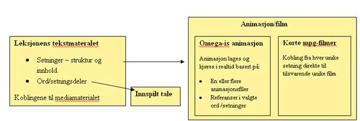
leksjonens byggesteiner: Tekst, struktur, koblinger og media
Som vist er det ganske enkelt å få et overblikk over grunnkomponentene. Tekstmaterialet er i dette tilfellet kjent, også den innspilte talen. Litt overraskende er kanskje de to typene animasjon resp. mpg-film? Dette kan skyldes at nesten alt det materialet som følger med i Omega-is er bygget på Omega-is-animasjoner. Eksempel på bruk av mpg-filmer finner du foreløpig bare i leksjonen ”Demo3” i ”X-Demo”-mappen – i setningene ”koppen hopper over hånden” og ”koppen hopper over koppen”. Vi skal nedenfor se på den klare forskjellen på håndteringen av leksjoner eller enkeltsetninger basert på animasjon respektive mpg-film – fordeler og ulemper. (OBS! ... QuickTime-formatets .mov-filmer og lydformatet mp3 kan benyttes fra versjon1.2 !).
I skissen over, er de mer kompliserte delene i leksjonsmaterialet gjemt bak ordene ”struktur” og ”koblinger”. Et par eksempler på øvelser vil vise hvordan disse strukturene og koblingene kan se ut, hvor de forskjellige leksjons- og mediafilene lagres i Omega-is mappestruktur, og hvor man gir eleven tilgang til nye leksjoner.
Vi skal nå se på to eksempler på leksjoner: Den ene bygger på korta videofilmklipp – såkalte. mpg- eller mov-filer av den typen som man ofte kan ta med digitale stillbildekameraer. Det andre leksjonseksemplet bygger på Omega-is eget animasjonsprogram. Målet er altså å få en generell kunnskap til redigeringsverktøyene, leksjonene og deres mediamateriale. Detaljene omkring hvordan leksjons- og animasjonseditorene brukes kommer vi til i senere kapitler..
· Start ”Lesson Editor” – leksjonseditoren
· Velg ”Arkiv” – ”Åpne” - eller trykk på ”Åpne”-ikonen – (mappen)
· Da ser du innholdet i Omega-mappen: Gå inn i mappen ”lesson-nb (bokmål) eller lesson-nn (nynorsk)”
· Gå deretter inn i mappen ”PassiveLessons” (passive leksjoner)
· Åpne leksjonen ”HandCupJumpExample.omega_lesson”
Skjermbildet bør nå se slik ut:
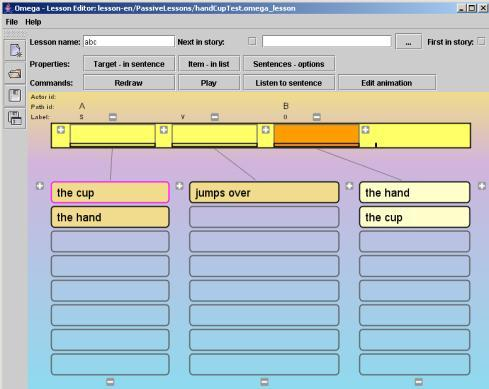
· Klikk på (f.eks.) ”koppen” (i venstre kolonne), deretter ”hopper over”, og så ”hånden” (i høyre kolonne). Ordene tales og plasseredenne filmen ved ås i sine respektive ”felt” i ”Setningsraden”.
· Klikk på knappen ”Lytt til setning” og hør hele setningen.
· Klikk på knappen ”Kjør” – og det spilles en kort videosekvens som illustrerer innholdet i setningen.
· Prøv å bytte ut et (eller to) av ordene i setningen ved å velge andre ord fra ”ordlistene”
· Klikk på ”Kjør” igjen for å se et videoklipp for den nya setningen.
Hvordan finner man riktig videosnutt?
· Klikk på knappen ”Setninger – alternativ”
Følgende vindu vises:

Her vises de setningene/kombinasjonene som kan lages i denne øvelsen. Som vis er hver setning koblet til en ”spesiell” ”Aktivitetsfil”, dvs. små videoklipp i form av mpg- eller mov-filmer. Legg merke til hvor filmene er lagret– den ”relative stien”; ”anim/ActiveVideo/…”. Denne stien fører til ”omega”-mappen, dvs. den mappen hvor Omega-is er installert på harddisken. Den nederste setningen i lista – ”Koppen hopper over hånda” – illustreres av filmen ”CupJumpsHand.mpg”.
· Prøv å finne denne filmen ved å:
1. Klikke på / markere nederste setningen i lista
2. Klikk på knappen ”Velg aktivitetsfil”
3. Finn fram til filen ”CupJumpsHand.mpg” ved å ”bla” i mappene (fra omega-mappen) gå først til mappen ”anim”, og deretter til mappen ”ActiveVideo”. Velg ”Avbryt” når filen er funnet.
Dette eksemplet har vist deg hvor enkelt en leksjon, basert på filmklipp, er bygd opp:
Ø To substantiv (”koppen” og ”hånda”), som kan være subjekt og objekt, sammen med en verbfrase (”hopper over”), kan til sammen lage 4 setninger.
Ø Disse setningene krever 4 unike illustrasjonsfilmer – som her er lagret i mappen ”../omega/anim/ActiveVideo/”.
Ø leksjonen ”HandCupJumpExample.omega_lesson” er norsk, og er derfor å finne under”…/omega/lesson-nb/ ...eller ........nn…” – i mappen ”PassiveLessons”.
Ø leksjonen refererer også til lydfilen. Mer om dette i neste eksempel.
· Start ”Lesson Editor” – leksjonseditoren– dersom den ikke allerede kjører
· Velg ”Arkiv” – ”Åpne” - eller klikk på ”øvelse
”-ikonen – (mappen)
· Åpne mappen ”lesson-nb eller .....nn”
· Gå deretter inn i mappen ” LessonTemplates” (leksjonsmaler)
· Åpne leksjonen ” 3WordsExercise-s-v-o-closed.omega_lesson”
Skjermbildet bør nå se omtrent slik ut:
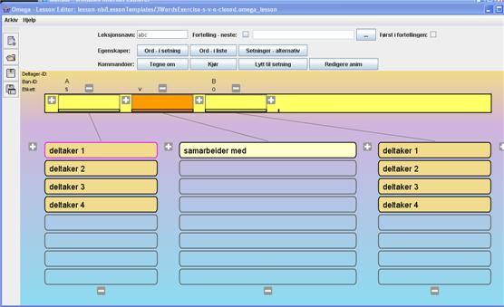
Dette er, som du kan se, samme leksjonsmal som vises når leksjonseditoren startes.
· Begynn, som i foregående eksempel, med å lage noen setninger ved å trykke på ordene ord i listene. Bruk”Lytt til setning” og ”Kjør” for å teste resultatet!
I denne leksjonen spilles ingen videosekvenser når du trykker ”Kjør”. I stedet kjøres en animasjon som er laget i Omega-is eget animasjonsprogram – i ulike varianter, avhengig av hvilke ord– og dermed ”deltakere” – som inngår i setningen.
I denne leksjonen kan det lages 16 forskjellige setninger (4 x 1 x 4 = 16). Om videoklipp eller tradisjonelle animasjoner hadde vært brukt, så hadde dette krevd16 forskjellige filmer for å illustrere alle variantene. Her klarer vi oss med en (1) animasjon som lages og spilles med en rollebesetning som bestemmes av den setningen som skrives.
· Klikk på knappen ”Setninger – alternativ” for å få et overblikk over de mulige setningene! Sammenlign med foregående eksempel:
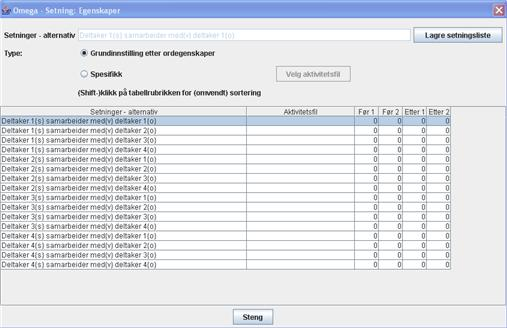
Her er det ingen linker til mpg-filmer for hver setning. I stedet er alternativet ”Grunninnstillinger etter ordegenskaper” markert.
Hvor finner vi disse ordegenskapene og deres linker til animasjon og deltakere?
· Lukk dialogen ”Setninger – alternativ” (over)
· Klikk på knappen ”Ord - i liste” (eller høyreklikk på noen ord i listene). Dialogboksen for ”Ord:Egenskaper” vises.
· Klikk på knappen med verbfrasen ”samarbeider med” i lista. Følgende dialogboks vises:
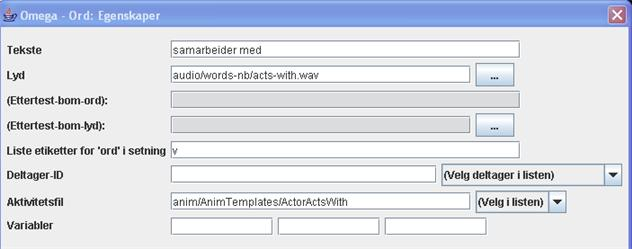
La oss se nærmere på innholdet i egenskapene for knappen ”samarbeider med”. Vi vil først bare konsentrere oss om de to feltene som refererer til mediafiler:
Ø I feltet for ”Aktivitetsfil” er det en referanse til dokumentet ”anim/AnimTemplates/ActorActsWith”. Trykk på knappen ”Velg i listen” og finn fram til animasjonsfilen ”ActorActsWith.omega_anim”. Den er i mappen ”AnimTemplates”, som ligger i ”omega\anim”-mappen. Velg ”Avbryt” når filen er funnet.
Ø Den andre koblingen til et mediafil er i i feltet ”Lyd”. Der linkes lydfilen ”audio/words-nb/acts-with.wav” (eller ”…acts-with.mp3”. Som vist er navnet engelsk, men mappene ”words-nb” og words-nn inneholder norsk innspilt tale (bokmål eller nynorsk). Disse mappene ligger i ”omega\media\audio”-mappen.
Dersom det føles voldsomt å holde styr på alle disse filene og mappene, er det forståelig. Vi håper at dette skal bli klarere etter hvert, og vi vil forsøke å gi et overblikk over filstrukturen i neste avsnitt.
Navnet på mediafilene er engelske for å få et mest mulig enkelt system å håndtere, for på den måten å kunne lenke til tilsvarende øvelser i ulike språkversjoner.
· Klikk nå – fortsatt med dilogboksen for ord-egenskaper åpen – på et av de andre ordene, f.eks. ”deltaker 1” i den venstre lista.
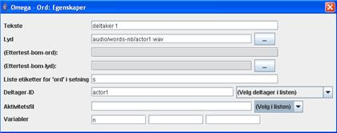
Innholdet i dialogen viser nå egenskapene for denne posten, som Tekst og linken til aktuell Lyd (som tidligere). Legg merke til det ikke finnes noen link til Aktivitetsfil, men det er i stedet angitt et deltaker-ID – ”actor1”.
· Klikk på knappen ”(Velg deltaker i lista)”. Det skal være følgende ”deltakere” å velge mellom: actor1, actor2, actor3, actor4 og bananen. Disse deltakerne er tilgjengelige i Omega-animasjonen ”ActorActsWith.omega_anim” som var linket i den foregående dialogboksen for ord-egenskaper.
De øvrige detaljene i ord-egenskapene venter vi med til senere.
Vi avslutter dette eksemplet med å gi en første introduksjon til animasjonseditoren:
· Lag en komplett setning i Setningsraden.
· Klikk deretter på knappen ”Redigere anim”. animasjonseditoren starter med den animasjonen som setningen er koblet til:
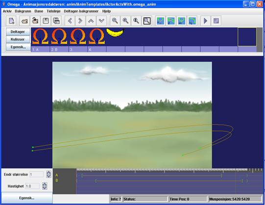
Her ser vi animasjonen ”ActorActsWith.omega_anim” klar for redigering. De fire deltakerne som var på listene i leksjonseditoren ovenfor finner du igjen i den øvre delen av skjermen – fire Omega-deltakere. Dessuten er det med en ubenyttet banan-deltaker.
Vi skal ikke fordype oss mye mer i animasjonseditorens hemmeligheter; det kommer vi tilbake til i kapittel F. Vi nøyer oss med å ta en liten titt på deltakernes egenskaper:
· Åpne deltaker-egenskapene ved å høyreklikke på en av deltakerne, f.eks. den første Omega-deltakeren, lengst til venstre i raden. Dialogvinduet (se nedenfor) viser egenskapene for den deltakeren som er markert.
Legg merke til deltakerens-ID – f.eks. ”actor1” – som blir hentet fra leksjonen for å koble hvert deltakerord i leksjonen med riktig deltaker i animasjonen!
Noter også at det her deltakerens utseende bestemmes via koblingen til en viss bilde-fil, i dette tilfellet bildet ”actor_1.png” i mappen ”actor” under ”media”-mappen.

Lukk egenskap-dialogen. Legg merke til at de to venstre deltakerne, som har ”etikettene” 1 og 2, er koblet til hver sin animasjonsbana via et ”Bane-ID” (”A” respektive ”B”). Banene er representert nederst på skjermen langs ”Tidslinjen” – med sine respektive ID – og finnes også på animasjonens ”scene”. (Disse ”Bane-ID” - ”A” og ”B” - finnes også referert til i leksjonseditoren – i over boksene for ordene i setningsraden. Mer om dette i animasjons- og leksjonseditorenes kapittel nedenfor.)
Prøv gjerne å kjøre animasjonen i animasjonseditoren ved å klikke på ”spill”-knappen opp til høyre. De to deltakerne som er med er 1 og 2, og de er knyttet til banene med ID ”A” og ”B”. Du kan teste en annen deltaker ved dra en av etikettene (merket 1:A eller 2:B) med musa til plassen under den ønskede deltakeren, f.eks under bananen.
Avslutt dette eksemplet ved å lukke animasjonseditoren (bekreft med et ja/yes), og deretter kan du ev. avslutte leksjonseditoren.
Eksempelet over har gitt et første innblikk i hvilke dokumenter/filer som benyttes til Omega-is leksjoner og animasjoner. Det har sikkert gått fram at det er en hel del, til tross for at vi bare har skrapt litt i ytterkanten. Dette er ikke sagt for å avskrekke, men for å gi en nødvendig forståelse for den kompleksitet som dessverre er mer eller mindre tilgjengelig i et multimediaprogram av denne typen.
Man behøver ikke ha full kontroll på alt dette for å begynne å leke med enklere redigeringsoppgaver. Programmet gir deg også en viss støtte underveis. Men jo bedre overblikk man har, desto lettere er det å unngå unødige problemer.
For å hjelpe deg å finne fram i dette terrenget, skal vi nedenfor forsøke å gi en oversikt over mappe-strukturen i Omega-is-installasjonen, og over hvor de forskjellige dokumenter/filer lagres i disse mappene.
I Windows installeres Omega-is normalt på harddisken i en ”omega”-mappe under mappen/katalogen ”Programfiler” (”Program files” på engelsk og en del andre systemer). Den grunnleggende mappestrukturen ser ut omtrent som dette:

Omega-mappen
I ”anim”-mappen er de animasjonsfilene og videoklippene som benyttes for å illustrere språkmaterialet i Omega-is
I ”lesson”-mappene er leksjonsdokumentene – for de språk som følger med installasjonen. De svenske er i ”lesson-sv”, de engelske i ”lesson-en”, norsk bokmål i ”lesson-nb”, nynorsk i ”lesson-nn”etc.
I ”media”-mappen er alt Omega-is mediamateriale (utom videoklippene i ”anim”), dvs. alle bilde- og lydfiler (inkl. de som benyttes i animasjonene), innspilt tale for de språk som ble valgt ved installasjonen, mm.
I ”register”-mappen ligger installasjonen, og data for de elevene som er lagt inn.
øvrige mapper hopper vi over, siden de er av mer teknisk karakter.
Så fortsetter vi med en nærmere titt på de utpekte mappene ovenfor.
 Omega-is
animasjonsfiler er tekstdokument i XML-format. De innholder ikke noe
mediamateriale i seg selv, men refererer til bilder og lyd som er
lagret under ”media”mappen. Animasjonene er fordelt i
følgende mapper:
Omega-is
animasjonsfiler er tekstdokument i XML-format. De innholder ikke noe
mediamateriale i seg selv, men refererer til bilder og lyd som er
lagret under ”media”mappen. Animasjonene er fordelt i
følgende mapper:
”ActiveAnim” – innholder alle animasjoner som benyttes, utenom de som hører til fortellingene (L1 og L3) som ligger lagret under ”ActiveStories”.
Noen animasjonsmaler finnes fortsatt i ”AnimTemplates.
En tom mappe ”MyAnim” ligger klar til egenproduserte animasjoner.
Det et begrenset antall videoillustrasjoner som følger med Omega-is, og de er lagret i mappen ”ActiveVideo”.
I mappen ”active” er de leksjonene som er tilgjengelige i elevmenyene – B, D, F, H, J, L og X-leksjoner, etc.
Programmet bygger selv opp menyene ut fra innholdet i ”active”-mappen. Denne mappen kan igjen innholde mapper, og til slutt en mappe med en ”xxx..omega_lesson”-fil som starter en leksjon – som ”D1.omega_lesson” i eksemplet t.v.! leksjonsfilene er (akkurat som animasjonsfilene) av typen XML.
Mappa D1 inneholder eksempelvis
image_enter.png
image.png
D1.omega_lesson
Hver mappe må innholde et bilde som heter ”image.png”, og helst også et annet med navn ”image_enter.png”. Disse bildene representerer mappene og leksjonene i menyene. (Bildene vises altså i startmenyen der du skal velge øvelse)
Innholdet i ”fortellingene” ligger i en spesiell ”ActiveStories”-mappe – fortsett fra første avsnittet i hver historie, som finnes i L-mappen under ”active”.
For øvrig finner vi her leksjonsmaler i ”LessonTemplates”, samt mappen ”PassiveLessons” for eget arbeidsmateriale etc.
I d en
omfattende ”media”-katalogen er det mye å
fordype seg i. Vi får nøye oss med en oversikt over
innholdet:
en
omfattende ”media”-katalogen er det mye å
fordype seg i. Vi får nøye oss med en oversikt over
innholdet:
Mappen ”actor” innholder alle de bildene som benyttes for deltakere i Omega-animasjonene. De er fordelt på flere undermapper. En del bilder finnes som dubletter, eller i varianter, i flere mapper. Bildformatet er PNG (Portable Network Graphics) med transparent bakgrunn (enten 256 frger + indeksert bakgrunn, eller millioner frger + s.k. Alfa-kanal). Her er også en mappe for egne deltakere ”MyActors”.
Mappen ”audio” inneholder de aller fleste av programmets lydfiler, alle wave/mp3-format (”xxx.wav/mp3”). De har 2 forskjellige funksjoner:
1. Lydfilene som benyttes i animasjonene – direkte under ”audio”
2. Den innspilte talen for leksjonene – i mappene for de språkene som velges ved installasjonen – ”words-sv”, ”words-en” etc.
Her er også en mappe som er forbered for egen lyd – ”MyAudio”.
Mappen ”background” innholder animasjonenes bakgrunnsbilder – oftest i JPG-format. Også her er det en mappe for eget - ”MyBackgrounds”.
I mappen ”feedback” er det filmer, bilder og lyd som benyttes som feedback ved kjøring ”Test”-modus.
I mappen ”Wings” er de bilder som benyttes til kulisser i omega-animasjonene.
 Mappen
”register” - elevinnstillinger og data
Mappen
”register” - elevinnstillinger og dataHer er det en mappe for hver elev som er registrert. Mappene innholder en fil for elevens innstillinger– ”pupil_settings.xml”, og et elevbilde (”id.jpg”). Disse filene blir dannet i forbindelse med at en ny elev legges inn, og oppdateres ved forandringer i elevens innstillinger – dvs. i ”Lærer”-modus.
Dessuten finner man datostemplede registreringer av elevens aktiviteter, som kan studeres nærmere under ”Resultat” i ”Lærer”-modus.
Med dette har vi gått gjennom introduksjonen av Omega-is redigeringsverktøy, datafiler og katalogstruktur.
Vi avslutter med å ta opp igjen de to eksemplene på leksjoner som er beskrevet ovenfor, og med å dra noen konklusjoner om de to typer av Omega-is-leksjoner de representerer:
Egenskaper: Bygger på koblinger til innspilte videosekvenser for setningene, samt på innspilt lyd for de enkelte ordene/frasene.
Fordeler: Enkel struktur - mindre antall referenser - bare video-filer (mpg/mov - for setninger) og lyd-filer (wav/mp3 - for ordene/frasene) å holde orden på.
Man behøver ikke lære seg animasjonseditoren for å lage eget materiale.
Dramatisering og filming av scener, med kobling til språklige uttrykk, kan bli en viktig del i en pedagogisk strategi hvor man bruker Omega-is for bearbeiding av inntrykk og språklig materiale..
Ulemper: Krever en film for hver mulige setning, og dette kan bli meget plasskrevende for mer komplekse øvelser.
Mange setninger/scener kan være vanskelige å få til med vanlige videoklipp (om man ikke gir seg ut på mer ambisiøse prosjekter med animert film eller trickfilming).
Egenskaper: Bygger på koblingene til Omega-animasjoner for setninger – med referanser til ord/fraser fra ulike deltakere i animasjonene, samt på innspilt lyd for de enkelte ordene/frasene
Fordeler: Effektivt og fleksibelt: En animasjon kan representere flere setninger i leksjonen. En leksjon, med flere hundre mulige setninger, kan byggas på et fåtall animasjoner.
Ulemper: Mer kompleks struktur – et antall refernser (og mulige variabler) å holde styr på - fra ordene i leksjonen til forskjellige animasjoner, og til forskjellige deltakere og deres baner i animasjonene.
Man må først lære seg animasjonseditoren for å lage og redigere materiale basert på Omega-animasjoner.
Leksjonseditoren gir mulighet å lage nytt leksjonsmateriale. Det kan dreie seg om helt nye leksjoner som tilpasses til en elevs spesielle motivasjon og behov eller om justeringer av eksisterende materiale.

Leksjonseditoren er et eget program som Åpnes fra startmenyen ved å velge Lesson Editor. Klikk på ikonen Omega Lesson Editor og vent til programmet starter.
OBS! leksjonseditoren holder rede på om forandringer er gjort i en leksjon! Om de ikke lagres markeres dette i vinduets ”tittel-linje”, og en du får en advarsel med kommandoene”Avslutt”, ”Åpne” eller ”Ny”.
Når programmet startes havner du først i et s.k. default-modus der det er mulighet til å lage helt nye leksjoner (se dette avsnittet). Her er det også mulig å endre en eksisterende leksjon.
1. Klikk på symbolet for Åpne, alternativt gå på Arkiv – Åpne.
2. Åpne den språkmappen hvor du vil endre den eksisterende leksjonen f.eks. Lesson-nb hvis det er en norsk bokmål leksjon eller Lesson-nn hvis det er en nynorsk leksjon.
3. Åpne mappen Active
4. Åpne den mappen som tilsvarer den søkte leksjonens leksjonsnivå (B-D-F etc.)
5. Åpne deretter mappen med det leksjonsnummeret som du vil forandre – og til slutt selve leksjonsfilen (som har et navn som slutter med ”.omega_lesson”).
Du vil fjerne et ord som eleven opplever så forstyrrende at han/hun ikke klarer å arbeide videre.. Ordet og dets linker til animasjoner og lydeffekter vil forsvinne. I følgende eksempel skal ordet ”posen” i øvelsesleksjonen Xercise-B2 bort. Gjør følgende:
· Åpne den leksjon hvor ordet finns i Lesson Editor (Xercise-B2 i mappen ” Xercises” i ”X-Demo”-leksjonene). Om et ord virkelig må fjernes i de vanlige leksjonene, må prosedyren gjentas for hver leksjon hvor ordet finnes.
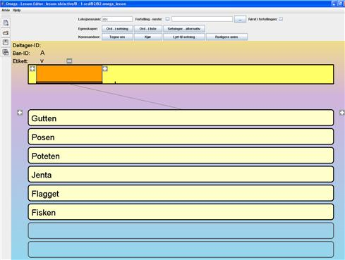
· Når leksjonen Åpnes vises en liste med alle de ordene som finnes i leksjonen.
· Klikk deretter på knappen med ”Ord - i liste” – eller høyreklikk på noen av ordene i lista. Da åpnes dialogvinduet ”Ord: Egenskaper” (se nedenfor).
· Klikk så på ordet ”Posen” i lista. Da vises egenskapene for dette ordet i dialogvinduet, som nedenfor. Plasser markøren og ta bort ordet som er skrevet i feltet ”Tekst”. Lukk dialogvinduet og lagre endringene før leksjonseditoren avsluttes – ved å trykk på diskettsymbolet (Lagre) eller gå inn i Arkiv og Velg Lagre. Nå vil ikke ordet ”Posen” finnes lenger i denne leksjonen.
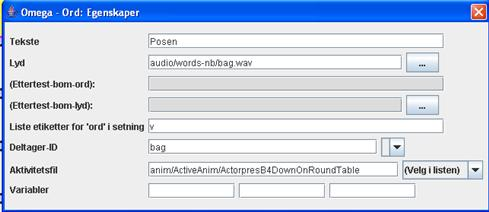
· Åpne den leksjon der ordet skal legges til i Lesson Editoren. Igjen benytter vi leksjon Xercise-B2 som eksempel. Klikk deg fram via mappene ”lesson-nb”, ”active”, ”X-Demo” og ”Xercises”. Åpne den slik at lista med ordene i leksjonen kommer fram
· Klikk på knappen med ”Ord - i liste” – eller høyreklikk på noen av ordene i lista – slik at dialogen ”Ord: Egenskaper” Åpnes.
· Klikk deretter med høyre musetast på et tomt ordfelt nedenfor de ferdigutfylte. Feltet blir markert med en farge i ytterkant. Sett markøren i feltet Tekst i dialogen og skriv inn ordet du vil legge til f.eks. ”Støvsugeren”. Bokstavene vises samtidig i ordfeltet. (Dette ordet – ”støvsugeren” - er også representert med en deltaker i en av animasjonene. Hvis du vil legge til et nytt ord som ikke kan illustrerer med en deltaker i de eksisterende animasjonene, må du naturligvis begynne med å legge til en passende deltaker (med tilsvarende bildefil)til i en eksisterende eller ny animasjon – se neste kapittel F.)
· Klikk på blaknappen ”…” på raden for Lyd. Finn fram en lydfil hvor ordet ”Støvsuger” er innspilt (vacuum.wav(mp3) i mappen Media/Audio/words-nb eller nn). Dobbeltklikk på filen eller marker den og trykk på knappen ”Lade”. Da blir linken til den innstilte lyden laget.
· Egen lyd kan spilles inn via en mikrofon som er koblet til datamaskinens mikrofoninngang. Man kan benytte ”Lydinnspilling”, standardprogrammet i Windows, men vi anbefaler gratisprogrammet Audacity (se Multimediabyrån på www.multimedia.skolutveckling.se eller http://audacity.sourceforge.net), lydredigereren i CD/DVD-pakken Nero, eller noe annet av de mange programmene for lydredigering som finnes på markedet (t ex GoldWave, SoundForge etc.). OBS! Kvaliteten på lyd som innspilles direkte på datamaskinen kan variere veldig mye. Be gjerne om hjelp av noen lydkyndige personer for å få bedre kvalitet. Lagre lydfiler i wav- eller mp3-format og flytt dem til mappen ”media/audio/words-nb eller....words-nn” etc.
· For å få en link til en animering av ordene må man først velge en animasjon - eller en såkalt ”Aktivitetsfil” - som innholder en deltaker som representerer ordet. Dette gjøres fra det biblioteket som finnes av animasjonsfiler under knappen ”Velg i lista” lengst til høyre på samme raden (nedoverpil - <Velg fil>). Marker den riktige animasjonen – i dette tilfellet filen ”B1.omega_anim” i mappen ”ActiveAnim” – og klikk deretter på Velg.
· Deretter skal deltakerens-ID fylles inn dvs. det unike navnet som er tilldelt deltakeren i animasjonen som skal kobles til ordet. Klikk først på knappen med ordet ”Støvsugeren” slik at ordet kommer opp i ”Setningsfeltet”. Klikk så på knappen ”Velg deltaker i lista”. Der bør du kunna velge deltakeren ”VacuumCleaner”. Du kan også selv skrive inn denne deltaker ID. Prøvekjør!
· Lukk dialogvinduene og lagre forandringene før leksjonseditoren avsluttes.
Før å kunne lage helt nye leksjoner kan man benytte eksisterende materiale nye kombinasjoner. Dette gjøres enklest ved å kopiere en mappe i active-mappen for det språket man jobber med, f.eks. lesson-no, mappe D2. Den kopierte mappen kan enkelt døpes om til f.eks. D4 (i iden installerte versjonen finnes bare D1-D3). Deretter åpnes leksjonen i leksjonseditoren. Nye ord skrivs inn på den samme måten som beskrevet ovenfor. Aktivitetsfiler, deltakere og lyd velges etc.
Hvis m en leksjon lages med helt nytt materiale må det finnes lydinnspillinger, samt animasjoner med bakgrunns-, kuliss- og deltakerbilder, alternativt videoklipp, i de bibliotekene som er satt av til dette. Se bl.a. Animeringsdelen (neste kapittel) om hvordan man gjør dette. For ett-ords, to-ords og tre-ordsleksjoner er det maler i mappen Lesson Templates som kan benyttes til dette.
Vi gir her 2 eksempler:
1. Hvordan en tre-ordsleksjon kan lages hvis man går ut fra en eksisterende leksjon, og med eksisterende animasjoner og mediamateriale.
2. Hvordan en leksjon med helt nytt materiale kan lages ved hjelp av videoklipp og nyinnspilt lyd.
· - Start
leksjonseditoren (Lesson editor) – Velg Arkiv/Åpne
- Gå till mappen
”lesson-nb\active\X-Demo\ØvningX\demo-LinkedAnim.omega_lesson
· Vi har her
en leksjon basert på aktivitetene ”jager” og
”hopper over”. Leksjonen benytter to animasjoner som
illustrerer disse aktivitetene..
Vi vil nå se om vi kan
utnytte dette materialet med nye deltakere, slik at vi kan arbeide
med ord og setninger som ikke finnes i de eksisterende baseøvelsene.
· Klikk på
ordet ”jager” slik at det havner i Setningsraden.
-
Klikk så på knappen ”Redigere anim” –
animasjonseditoren åpnes med
den animasjonen som er
koblet til ordet ”jager” (ChaseChased.omega_anim)
-
Noter hvilke deltakere som er tilgjengelige i animasjonens
deltakerliste.
· Lukk
animasjonseditoren – trykk deretter på ”hopper
over” (som erstatter ”jager” i Setningsraden) og
aktiver igjen knappen ”Redigere anim” – nå
åpnes animasjonseditoren med animasjonen
”JumpOver.omega_anim”
- Jfr. innholdet i deltakerliste
med foregående animasjon (se nedenfor)
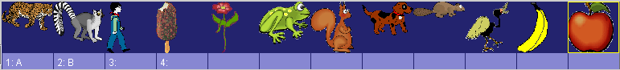

Som vist finnes bl.a.en bever, en frosk og et ekorn i begge. Lukk animasjonseditoren.
· Vi velger å lage en jage-hoppe-over-leksjon med deltakerne ”frosken”, ”beveren” og ”ekornet” (Det går selvsagt også an å lagre animasjonene over under nye navn, for å lage en helt ny og identisk deltakerliste for begge animasjonene, og deretter benytte disse i den nye leksjonen):
- Velg ”Arkiv” – ”Lagre som” for å lagre den åpne leksjonen under et nytt navn. Da åpnes en Lagre-dialog, se nedenfor.
- Gå opp et nivå i mappestrukturen:
- Lag en ny mappe (i mappen ” Xercises”) , og døp den til ”Xercise-Lesson1”, gå inn i mappen og lagre filen som f eks ChaseJump_new.omega_lesson.


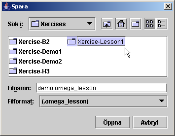

· Nå skal innholdet i leksjonen endres:
- Lag først en setning på Setningsraden (f eks ”Gutten jager isen”)
- Åpne dialogen for Ord: Egenskaper (det er knappen ”Ord - i liste” )eller høyreklikk på ordet ”gutten” så vises egenskapene for feltet.
- Erstatt teksten ”Gutten” med ”Frosken”
- Trykk på knappen ”…” til høyre for Lyd og bla deg fram til lydfilen ”frog.mp3” i mappen ”audio\words-nb eller words-nn”
- Ved deltaker-ID fjern”boy” trykk på ”Velg deltaker i listen” og velg ”frog”
- Fortsett med å erstatte/legge inn de øvrige nye deltakerne i kolonne 1 og 3 for alle de tre deltakerne frosken(frog), beveren(beaver) og ekornet(squirrel) jfr.bildene under..
 à
à

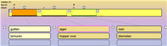à 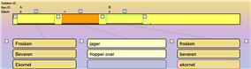
· Prøvekjør, korriger og lagre den nye leksjonen – provkjør også i leksjonsdelen.
Vi skal nå se hvordan man kan lage en leksjon
basert på helt nytt mediamateriale. Vi velger da å gå
ut fra videoklipp, fordi dette ikke krever kunnskaper og ferdigheter
i å behandle animasjonseditoren og all bilde- og lydbehandling
i tilknytning til å lage animasjoner(se kapittel F).
Det vi
trenger er et antall korte videosekvenser som illustrerer de
setningene vi ønsker å lage, samt lydinnspillinger for
de ordene eller setningene som inngår.
· Vi
begynner med å planlegge leksjonens innhold, og tenker oss
følgende utseende:
prinsessa
kysser
prinsen
prinsen
dytter
prinsessa
Dette skulle kreve 2×2×2=8 videosekvenser for å dekke alle mulige kombinasjoner, og 4 lydinnspillinger for de ordene som er med.
· Vi skal nå se på hvordan disse mediafilene kommer på plass – enten ved å spille dem inn selv eller ved hjelp av en annen ressurs.
- Spill inn de fire ordene– følg anvisningene i neste avsnitt – og plasser lydfilene i mappa”media\audio\words-nn eller nb\MyWords” under omega-mappen. Hvis filene får engelske navn er det lettere å overføre materialet til andre språkversjoner – altså: ”princess.wav(mp3)”, ”prince.wav(mp3)”, ”kisses.wav(mp3)”, ”pushes.wav(mp3)”. (Du kan gjerne også lese inn ordene på engelsk når du først er i gang, og legg dem i ”words-en”
- Dramatiser nå de 8 handlingene – enten med levende deltakere, eller med hånd-dokker eller lignende..
- Spill inn med videosekvensfunksjonen på et digitalt stillbildekamera, eller med et videokamera.
- overfør videofilen til datamaskinen og plasser
dem i mappen ”anim\ActiveVideo” under omega-mappen.
OBS!
Videosekvensene bør i være meget korte, c:a 3 – 10
sek.
OBS Videofilene må være av MPG- eller MOV-format!
Til og med AVI-filer kan i vanligvis benyttes, men da bør man
døpe dem om, slik at de får endelsen”.mpg”.
· Start leksjonseditoren (om den ikke allerede er i gang)
- Åpne leksjonen ”3WordsExercise-s-v-o-VideoClip” i mappen ”lesson-nb eller nn\LessonTemplates”
- Velg ”Arkiv”- ”Lagre som” og lagre leksjonen i en ny mappe f.eks under mappen ”lesson-nb eller nn/active\X-Demo\ØvningX”
- Åpne egenskapsdialogen for ”Ord i lista”
og legg inn ordene i henhold til de valgte ordene over. Koble ordene
med de nyinnspilte lydfilene (fra mappen
”media\audio\words-nb\MyWords”).
OBS!
I denne leksjonen, som er basert på videoklipp, behøver
man ikke angi noen deltaker-ID, eller koble noen aktivitets- eller
animasjonsfiler i egenskapsdialogen.
- Lukk dialogboksen for ord-egenskaper når alt er klart, og lagre leksjonen.
- Trykk på knappen ”Setninger - alternativ”, og marker deretter radioknappen ”Spesifikk” (ved Type) og trykk på ”Velg aktivitetsfil” for å finne fram den rette videofilen fra mappen”anim\ActiveVideo” – se bildet nedenfor.
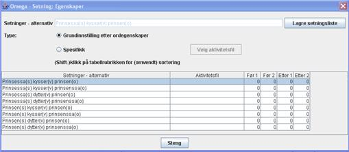
· Lukk dialogboksen for Egenskaper – Setninger – alternativ, lagre leksjonen, prøvekjør fra leksjonseditoren (korriger hvis nødvendig) kjør leksjonen deretter i hovedprogrammet for å se om det fungerer riktig..
Egen lyd kan innspilles via en mikrofon som kobles til datamaskinens mikrofoninngang. Man kan anvende ”Lydinnpilling, standardprogrammet i Windows. Dette programmet finner som regel under Tilbehør – Underholdning i Startmenyen. Hvis det ikke er der, kan man lete etter navnet sndrec32.exe i WINNT- eller Windows-katalogen og ”system32”-mappen. Dette er et meget enkelt program, og det er bare de helt basale redigeringsmuligheter som finnes i programmet, som f.eks.å kutte lyden i begynnelsen og på slutten.
Før å få bedre muligheter for innspilling og lydbearbeiding kan vi anbefale å bruke gratisprogrammet Audacity (se Multimediabyrån på www.multimedia.skolutveckling.se eller http://audacity.sourceforge.net) alternativt lydredigereren i CD/DVD-pakken Nero, eller et annet av de utallige programmene for lydredigering som finnes på markedet(f.eks. GoldWave, SoundForge etc.).
OBS! Kvaliteten på lyd som spilles direkte inn i datamaskinen kan variere veldig mye. Be gjerne om å få hjelp av noen med kunnskap om lyd for å få bedre kvalitet. Det blir ofte bedre å spille lyden inn på en ekstern innspillingsenhet, f.eks.en mp3 spiller og deretter spille det inn på datamaskinen via Line-inngangen, alternativt overføre ferdige lydfiler på annen måte.
Lydfilene må lagres i wav- eller mp3-format og legges i mappen ”media/audio/words-nb eller nn” (-en etc) for innleste ord/setninger til leksjonene, alternativt ”media/audio”-mappen for belønningslyd til animasjonene.
Vanligvis anbefaler vi den tekniske kvaliteten 44 100 kHz; 16 bits; mono eller stereo, for de digitale lydfilene..
Leksjonsmenyene i Omega-is avbilder dynamisk innholdet i mappen ”active” under ”lesson-xx”, der ”xx” står for respektive språk; ”sv” for svenske, ”en” for engelsk, ”nb” for norsk bokmål, ”nn” for nynorsk etc.
For å lage en ny leksjon tilgjengelig i leksjonsmenyen lager man en mappe med det navnet man vil at leksjonen skal ha. I denne plasseres leksjonsfilen xxx.omega_lesson. Vil man at leksjonens knapp skal vise et bilde som illustrerer innholdet må en til to bildefiler med navnene image.png og image_enter.png også legges i denne leksjonsmappen.. (Det bildet som slutter med ”_enter” er det som vises når knappen har fokus via muspekeren eller tastaturstyring).
Strukturen for dette er avbildet over under kapittel D, avsnittet ”Mappen ”lesson-nb” - norske leksjoner” på side 27. De bilder som benyttes til image- og image_enter-filene er samlet i mappen ”LessonUI-Graphics” under ”media”-mappen.
Leksjonseditoren innholder en mengde sofistikerte funksjoner for å dynamisk bygge opp referanser fra elevens valg i leksjonen till riktige animasjonsfiler og deltakere i disse. Dessuten finnes det funksjoner for å overføre informasjon mellom en serie leksjoner – og valgene i disse – for på den måten å kunne bygge opp en fortelling.
Disse funksjonene er ganske vanskelige å forklare og forstå. Vi nøyer oss her med en ganske kort presentasjon, og henviser interesserte leksjonsforfattere til å se på, lære av og gjenbruke innholdet og funksjonaliteten i eksisterende leksjoner og fortellinger.
I en leksjon kan man oppgi inntil tre variabler (1, 2 og 3) i
egenskapsdialogen for hvert ord i ordkolonnene. Disse variablene
kommer man til fra feltet for Tekst, Lyd og /eller Aktivitetsfil i
egenskapene for ord i andre kolonner– eller fra
egenskapsdialogen for setningsdelene i setningsfeltet – i
leksjonen. Dette kan vi kalle ”interne”
variabelreferanser. (Variablene kan også refereres til mellom
ulike del-leksjoner i fortellingen – ”eksterne”
variabelreferanser).
Formatet for
interne variabelreferanser er{+1} for variabel 1 i den neste
ordkolonnen (t.h.), {++3} for var.3 i den tredje ordkolonnen, {-2}
for var. 2 i foregående kolonne (t.v.) etc.
Mange eksempler på bruk av intern variabel finnes i
leksjonene H3-H5, samt i J-leksjonene.
For flere detaljer om
eksterne variabelreferanser i fortellinger – se nedenfor under
”Fortellinger”.
Normalt kobles hver setning i en leksjon til en animasjonsfil. Men
det finnes faktisk mulighet for å koble til mer enn en
animasjon, d.v.s. å spille to (eller flere) animerte scener
etter hverandre som en illustrasjon til en setning.
Dette kan gjøres på flere måter: En måte
er at to aktivitetsord kobles til hver sin animasjon – som i
eksempelanimasjonen ”Demo-LinkedAnim”-leksjonen, som er i
den norske leksjonsmenyen under X-Demo–ØvningX, i mappen
”lesson-nb eller nn\active\X-Demo\Xercises”.
En annen
måte er å angi flere animasjonsfiler med komma mellom i
egenskapene for et aktivitetsord (se fortellinger L3-8 i mappen L3
under ”lesson-nb eller nn\ActiveStories”). OBS!
Tilsvarende kan være nødvendig å gjøre for
deltaker- og Ban-Id..
Når man skal lage en fortelling trenger man funksjoner for å ta vare på de valg av deltaker, miljøer mm man har gjort tidligere, slik at tråden i historien opprettholdes. I Omega-is gjøres dette ved å benytte eksterne variabler. På denne måten overføres informasjon mellom delene av fortellingen. Vi ser på noen eksempler i de leksjonene L1- og L3-fortellinger:
Første delen av L1-historie ”L1-1” finner du i ”lesson-nb eller nn\active\L_Fortelling\L1”.
Der finner vi følgende egenskaper for den ene av de to alternative hoveddeltakerne i fortellingen– ”hunden med den gule hatten” (den andre er ”dinosauren med det røde skjerfet”):
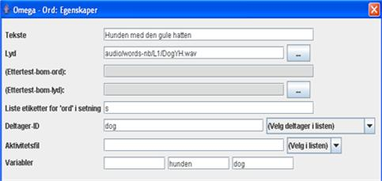
Legg merke til deltaker-ID (”dog”) og de to variablene ”hunden” (var-2) og ”dog” (var-3)!
Denne leksjonen har fått sitt ”leksjonsnavn” satt til ”L1-1” og er markert som ”Først i fortellingen”
Vi har dette i minnet og finner vi fram til avsnittet ”L1-5” lengre framme i historien. Denne finner vi i mappen ”C:\omega\lesson-sv\ActiveStories\L1”. Der ser vi på egenskapene for setningsdelen ”- sa dinosauren”:
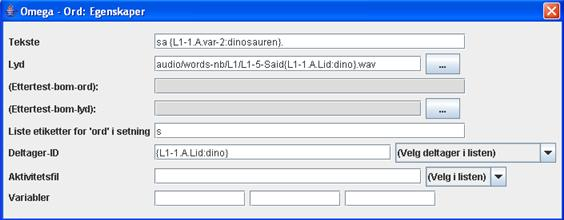
innholdet i ”Tekst” er som vist”- sa {L1-1.A.var-2:dinosauren}.”
Dette betyr at variabel 2 (”var-2”) for deltakeren med Bane-ID ”A” i leksjon ”L1-1” tilkalles. Om denne variabelen ikke er tilgjengelig, benyttes verdien etter kolon-tegnet dvs. ”dinosauren”. Delene i variabelreferansen skilles med punkter, og alle holdes sammen med klammerparenteser.
Om vi i L1-1 valgte ”Hunden med den gule hatten” blir verdien for ”L1-1.A.var-2” er lik ”hunden”. Teksten som vises på knappen blir da– i stedet for for den kryptiske variabelreferansen – i klartekst: ”- sa hunden”.
Se også på variabelreferansen ved ”deltaker-ID”: Der tilkalles deltaker-ID – her tilkalles ”Lid” – for deltakeren med Bane-ID ”A” i leksjon ”L1-1”. Som standard angis ”dino” (etter kolon), men i vårt tilfelle skulle det vært ”dog” som var deltaker-ID for hunden.
Også for ”Lyd” benyttes variabelen ”Lid” for å få lydfilen til å passe teksten for den deltakeren vi har valgt å følge i fortellingen.
Som vist gjelder det å holde tunga rett i munnen med referansene for at alt skal stemme.. Det hele kan bli ganske kompleks i en litt mer innviklet fortelling enn denne. Den interesserte kan fordype seg i håndtering av variabler i L3-fortellingen for å se hvordan dette kan se ut.
Der kan du finne referanser av typen:
”anim/Stories/L3/L3-5{L3-4.W4.var-3:meadow}” – hvilket i klartekst betyr at her tilkalles animasjonsfilen L3-5 – med tillegget fra variabel 3 (var-3) fra valgt ord i ordkolonne 4 (W4) i leksjon L3-4, og at standard er tillegget ”meadow” ( dvs ”L3-5meadow”).
OBS: Fra versjon 1.2 er det også mulig å tilkalle variabler i leksjonene direkte fra de animasjoner som tilkalles! Se variabler i kapittel F nedenfor!
Her følger en liste med kommandoer og funksjoner i Omega-is leksjonseditor:
Arkiv:
 Nytt
– Åpner en ny leksjonsfil
Nytt
– Åpner en ny leksjonsfil
 Åpne
– viser Åpne-dialogen for å hente en eksisterende
leksjon
Åpne
– viser Åpne-dialogen for å hente en eksisterende
leksjon
 Lagre
– lagrer en åpen fil.
Lagre
– lagrer en åpen fil.
 Lagre som–
viser Lagre-dialogen for å gi et navn på leksjonen.
Lagre som–
viser Lagre-dialogen for å gi et navn på leksjonen.
Avslutte – avslutter leksjonseditoren – med et kontollspørsmål..
Hjelp:
- Vis manual – viser redigeringsmanualen.
- Om Omega-is – gir informasjon om Omega-Is
- Om leksjonseditoren– gir informasjon om leksjonseditoren
Knapper / funksjoner i Verktøyfeltet :

Fortellingsfunksjoner:
- leksjonsnavn – mulighet til å gi leksjonen navn – benyttes til referanser mellom del-leksjoner i fortellinger.
- Fortelling – neste : – angir neste leksjonsfil i en fortellings-sekvens. Huk av i ruta etter Fortelling – neste og trykk på Bla knappen ”…”
-
Først i fortelling:
– Merk av i firkantboksen dersom den aktuelle leksjonsfilen er
først i en fortellings-sekvens. Et slikt første
leksjonsavsnitt i en fortelling skal ligge i en egen mappe under
L_Historier i ”active”-mappen under ”lesson-xx”.
øvrige
filer i historien kan legges i samme mappe under
”ActiveStories”-mappen.
Egenskapsknapper:
- Ord– i setning– Åpner dialogboksen for Mål: Egenskaper i setningen– kan også åpnes med høyreklikk på et sted i Setningslinja.
- Ord – i lista – Åpner egenskapsdialogen for ordene i ordlistekolonnene– kan også åpnes med høyreklikk på et ord i kolonnene..
- Setninger – alternativ – Åpner vinduet for setnings-egenskaper, dvs. lista over de mulige setninger/kombinasjoner som kan lages av ordene/frasene i leksjonen – med mulighet å koble til videoklipp, samt å velge spesielle setninger for spesialpreparerte før- og ettertester i lærermodus..
Kommandoknapper:
- Tegne om– tegner om vinduet – kan være nødvendig etter tillegg eller sletting av ordkolonner eller setningsdeler etc.
- Kjør – kjør / spiller den animasjonen som tilsvarer aktuell setning i setningsfeltet. Det krever at en slik setning er laget..
- Lytt på setning – spiller lydfilene som tilsvarer ordene/frasene i aktuell setning på setningsraden.
- Redigere anim – Åpner animasjonseditoren med den animasjonen som er koblet med ”aktivitetsordet” for den aktive setningen (ev. påverket av referanser i andre ord) .
leksjonsområdet:
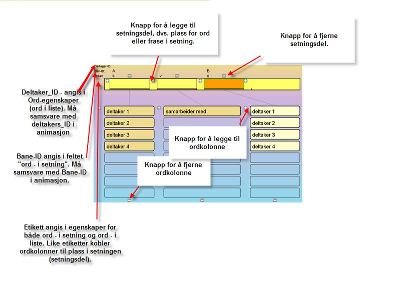
Pluss- og Minus- -knappene ved setningsfeltene og ordkolonnene (se bildet over) legger til eller fjerner plass til ’setningsdel’ eller ordkolonne– etter et kontrollspørsmål. OBS - maksimum 6 plasser/setningsdeler i setningsfeltet!
Egenskapsdialogene :
Setningsdel – i setning:
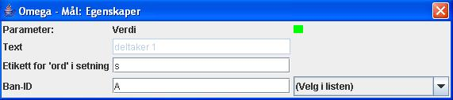
- Tekst – vises ev. valt ord/frase for setningsdelen/målordet – skriv ikke inn tekst selv!
- Etikett for ’ord’ i setning – skal settes for å passe til den ordkolonnen som skal kobles..
- Ban-ID – Velges blant tilgjengelige, for ønsket rolle i aktuell(e) animasjon(er). OBS! Kan referere til variabel fra annen ordkolonne for valg av Ban-ID (f.eks. leksjon H4).
Ord – i liste:
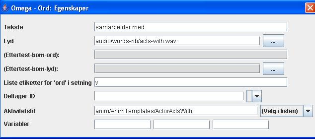
- Takst
– det ord eller den frase som skal vises og velges for
plassering i setningen.
OBS! Ordet/frasen kan inneholde variabler fra andre
ordkolonner som modifiserer det som vises og sendes til
setningsraden.
- Lyd
– den lydfilen som passer til teksten.
OBS!
Filreferansen kan innholde variabler fra andre ordkolonner som
modifiserer referansen– se nedenfor under
”Variabler”.
- (Ettertekst – bom-ord): – eventuelt bom-ord (distraheringsord) for før- og ettertest i lærermodus..
- (Ettertest – bom-lyd): – lydfil som matcher bom-ordet.
- (Etikett(er)
for ’ord i setning’ – her angis en
etikett som passer med den ”setningsdelen” i setningen
hvor ordet/frasen skal havne når du velger.
OBS!
Etiketten gjelder for hele ordkolonnen og behøver ikke angis
for hvert ord.
OBS! To etiketter kan angis – delt med
kommategn– for å koble en ordkolonne til to ulike mål
i setningsraden – som i leksjon F3, F9 etc. der substantivet
kan være både subjekt og objekt i setningen.
OBS! Flere ordkolonner kan ha samme etikett slik at de
setter inn ord til samme setningsdel i setningsraden – som i
1-ordleksjonene B3 og B4.
- deltaker-ID
– Velges for å matche ”deltakerord” til
riktig deltaker i rollelisten for den animasjonen som lenkes via
aktivitetsordet (inklusive eventuelle variabler fra andre ord).
Gjeldende deltaker finner du under ”(Velg deltaker i listen)”
– under forutsetning at en setning er blitt laget i
setningsraden, slik at en animasjon er referert.
OBS! deltaker-ID er ikke nødvendig for ord som ikke
skal referere til noen deltaker i animasjonen, slik som
”aktivitetsord” (oftest verb) og ord med andre
funksjoner.
- Aktivitetsfil
– for aktivitetsord (oftest verb) angis her den animasjonsfilen
som tilsvarer den hendelsen som aktivitetsordet (sammen med ev.
variabler) innbefatter..
OBS! Filreferansen kan inneholde
variabler fra andre ordkolonner som modifiserer den aktuelle
referansen – se nedenfor under ”Variabler”.
-
Variabler
– Her kan man oppgi opp til tre variabler (1, 2 og 3) for
å tilkalles fra feltene for Tekst, Lyd og /eller Aktivitetsfil
i egenskapene for ordene i andre kolonner i leksjonen (”interne”
variabelreferanser), eller t.o.m. fra andre leksjoner i fortellinger
(”eksterne” variabelreferanser).
Formatet for å tilkalle variabler internt er {+1} for
variabel 1 fra neste i ordkolonnen (t.h.), {++3} for var.3 i tredje,
{-2} for var. 2 i foregående kolonne (t.v.) etc.
For
flere detaljer og om eksterne variabelreferanser i fortellinger –
se tidligere avsnitt over om ”Avanserte – variabler,
fortellinger mm”.
Setninger – alternativ:
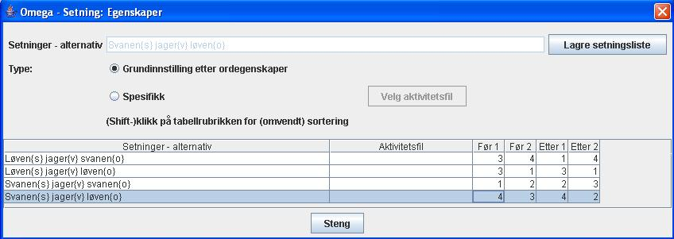
Denne dialogen viser en liste over alle de setningene som kan lages ved hjelp av ordene eller frasene i leksjonen – for oversikt og dokumentasjon for mulige lenker til spesielle videoklipp, samt spesielle valg til tester i lærermodus.
Lagre setningsliste–listen lagres som en tekstfil for dokumentasjon og utskrift fra et tekstredigeringsprogram, f.eks. Notisblokk.
Grunninnstillinger, etter ordegenskaper – er grunninnstillingene som innebærer at setningen illustreres med en Omega-is-animasjon i henhold til det som er satt i leksjonsmaterialet.
Spesifikk – Velg aktivitetsfil – innebærer at markert setning kobles direkte til en mpg/mov-videofilm.
Nummerering i listen under Før 1 og 2, Etter 1 og 2 – her styres hvilke setninger som skal utnyttes i før - og ettertest i lærermodus.og i hvilken rekkefølge de skal presenteres i..
kapittel F: animasjonseditoren
Animasjonseditoren gir mulighet for å lage helt nye animasjoner, som senere kan kobles til nytt språklig materiale i leksjonseditoren.
Men animasjonseditoren gir også mulighet for å forandre eksisterende leksjoner. Man kan for eks. Legge inn et alternativt bilde eller forandre hastigheten på noen av deltakerne i animasjonen. Man vil kanskje legge inn en annen bakgrunn enn den som finnes i den aktuelle leksjonen. Kanskje er et bilde av elevens egen skolegård mer stimulerende for eleven.
OBS! animasjonseditoren holder orden på om endringer gjøres i en animasjon! Om du ikke lagrer markeres dette i vinduet ”tittel”, og en advarsel blir gitt ved kommandoen ”Avslutt”, ”Åpne” eller ”Nytt”.
Først tar vi en titt på animasjonseditorens vindu og dens deler:
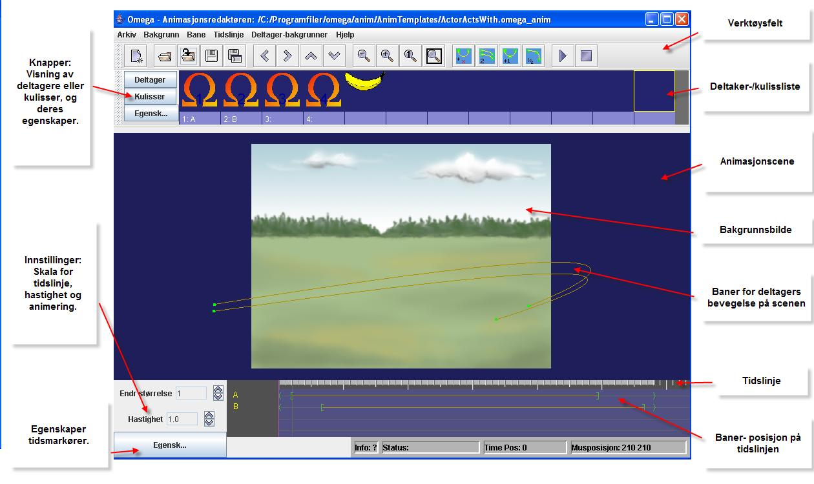
Animasjonseditoren er et eget program som enten kan åpnes ved å velge ”Rediger anim” fra leksjonseditoren (se foregående to kapitler), eller vegle animasjon editoren fra startmenyen.

En fin måte å komme i gang med å bruke animasjonseditoren er å gjøre små endringer av, eller tillegg til, eksisterende animasjoner.
· Start leksjonseditoren.
- Åpne leksjonsfilen ”HeadlessHunt.omega_lesson” som du finner i leksjonen ”Xercise-Demo2” i mappen ” Xercises” i ”X-Demo”-leksjonene. Vi skal legge til et par nye hoder til de andre utbyttbare i denne jage-animasjonen.
- Klikk på noen av ordene i leksjonen slik at en komplett setning kommer opp i setningsraden.
- Klikk deretter på knappen ”Redigere anim” – animasjonseditoren åpnes da med animasjonen ” HeadHunters.omega_anim” (i mappen /anim/MyAnim).
· Maksimer vinduet. I deltakerlisten er det to hodeløse figurer pluss fire hoder (som tilhører dette programmets utviklere) – se nedenfor. Vi skal nå legge til ytterligere et par nye figurer. Høyreklikk på den første tomme plassen i deltakerlisten (eller venstreklikk på ruta og deretter på knappen ”Egensk...”).
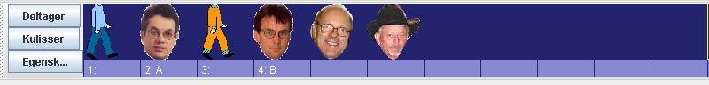
· En tom deltakeregenskaper-dialog vises – klikk på knappen ”Velg” for å koble til en ny deltaker/bilde. Åpne mappen ”actor”, og deretter”MyActors” og Velg filen ”bush.png”.

· Gjenta prosedyren for neste deltakerplass og velg filen ”saddam.png”. deltakerlisten bør nu se ut som denne:
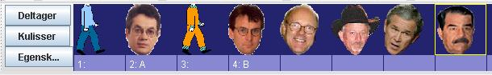
Ta tak i etiketten ”2:A” med musa og dra den til Saddam-deltakeren, som bildet over viser. Gjør tilsvarende med etiketten ”4:B” men til Bush-deltakeren.
· lukk
dialogboksen for deltakeregenskaper slik at den ikke er i veien.
Prøvekjør nå animasjonene med de to nye
deltakerne:
Klikk på Spill-knappen!
Resultatet viser at vi er på god vei, men at visse justeringer
er nødvendige. Hodene på Bush og Saddam er litt
feilplasserte under animeringen, og muligens litt for store (men
dette kan jo også være et morsomt poeng…).
· Åpne dialogboksen for deltakeregenskaper igjen ved å høyreklikke på et av hodene f.eks. det første av disse. Egenskapene for deltakeren med deltaker-ID ”Head1” vises (nederst t.v.). Klikk deretter på Bush-deltakeren og sammenlign:
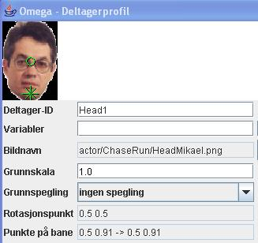 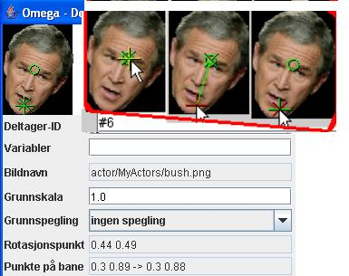
Som vist er det tre grønne markeringer i hvert bilde – en sirkel, et kors og et kryss. Sirkelen representerer et ”Rotasjonspunkt”, som akkurat nå er mindre interessant. Korset og krysset representerer såkalte ”Banepunkter”, dvs de punktene der deltakerne festes på sin bane i animasjonen – ved dens begynnelse og slutt. På ”Head1” er disse banepunktene plassert på deltakerens hake. På Bush-hodet er alle tre punktene plassert mitt i panna. Flytt nå ”banepunktene” (korset og krysset) slik som på de innfelte bildene i rød ramme. Når musa peker på punktene farges en av dem gul. Hvis det ikke er det ønskede punktet, ta musmarkøren bort og tilbake igjen– da markeres neste punkt gult. Ta tak i korset med musa når det er merket gul og dra den til hakeområdet som på bildet. Gjør deretter det samme med krysset. Tallverdiene endres for banepunktene, for å havne omtrent på de samme verdiene som vises i bildet over. Gjør dette også for Saddam-deltakeren!
· Prøvekjør animasjonene igjen. Fornøyd? Endre også ”Grunnskala” (størrelsen) på de nye hodene, f.eks. til verdien 0.8. OBS desimal-punktum – ikke desimal-komma – må benyttes for alle parametrene i animasjons-editoren!
· Avslutt redigeringen av animasjonen med å erstatte de anonyme #6- og #7-vediene for deltaker-ID med valgfrie passende navn– f.eks. ”Bush” og ”Saddam”, eller ”Head5” og ”Head6”. Lagre animasjonene og lukk animasjonseditoren.
· Vi er nå tillbake i leksjonseditoren og kan der Legge til ordene ”Bush” og ”Saddam” med referanser til de nye deltakerne i animasjonen. (Se foregående kapittel for detaljer om hvordan dette går til – lydfiler finnes i ”extra”-mappen.).
For noen elever kan en bestemt animasjon oppleves som altfor kort/rask – eller for lang (langsom). Dette kan motivere til en justering av lengden på enkelte animasjoner. Vi skal nå se hvordan dette gjøres.
· Start leksjonseditoren, Åpne leksjonsfilen ”demo.omega_lesson” i leksjonen ”Xercise-Demo1” i mappen ” Øvningx” i ”X-Demo”-leksjonene. Lag en setning som innholder ordet ”jager”. Klikk deretter på ”Redigere anim”. animasjonseditoren med ChaseChased.omega_anim vises omtrent som under:

· Nederst på skjermen er ”Tidslinjen” hvor animasjonsbanene er representert. Disse strekker seg over et tidsrom på ca 6 sekunder. Vi vil nå komprimere hendelsen til ca 4 sekunder. Prøvekjør først animasjonen (i maksimert vindu) for å få en følelse av hastigheten. Prøv nå å forkorte den øverste banens lengde på tidslinjen ved å Ctrl-musklikke ta tak i banens sluttmarkering (”]”) og dra den til ca 4,1 sek som nedenfor.

· Gjenta deretter prosedyren for den nederste banen (til ca 3,9 sek), og forkort til slutt hele animasjonstiden ved å Ctrl-dra en av (og dermed alle) sluttmarkørene ”>” til posisjonen ca 4,2 sek som nedenfor. (OBS! En liten feil i programkoden gjør at animasjonslengden ved Ctrl-museklikk på markøren først forlenges med ca 0,8 sek. Blås i dette, og den avvikelse som oppstår mellom musepekeren og markøren, og dra sluttmarkørene til rett posisjon som på bildet.)
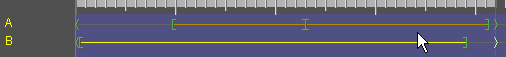
· Prøvekjør nå igjen animasjonen. Ble resultatet bedre eller dårligere? Lagre animasjonen dersom resultatet av endringene er bedre enn det opprinnelige. Fortsett ellers gjerne med å lek med banenes lengde og test resultatet. Avslutt deretter animasjonseditoren – etter å ha lagret, om ønskelig.
Vi fortsetter med samme Xercise-Demo1-leksjon som i over.
· Lag nå en setning som innholder frasen ”hopper over”. Klikk på knappen ”Redigere anim”og animasjonseditoren vises omtrent som nedenfor med animasjonen ”JumpOver.omega.anim” (i mappen /anim/MyAnim):
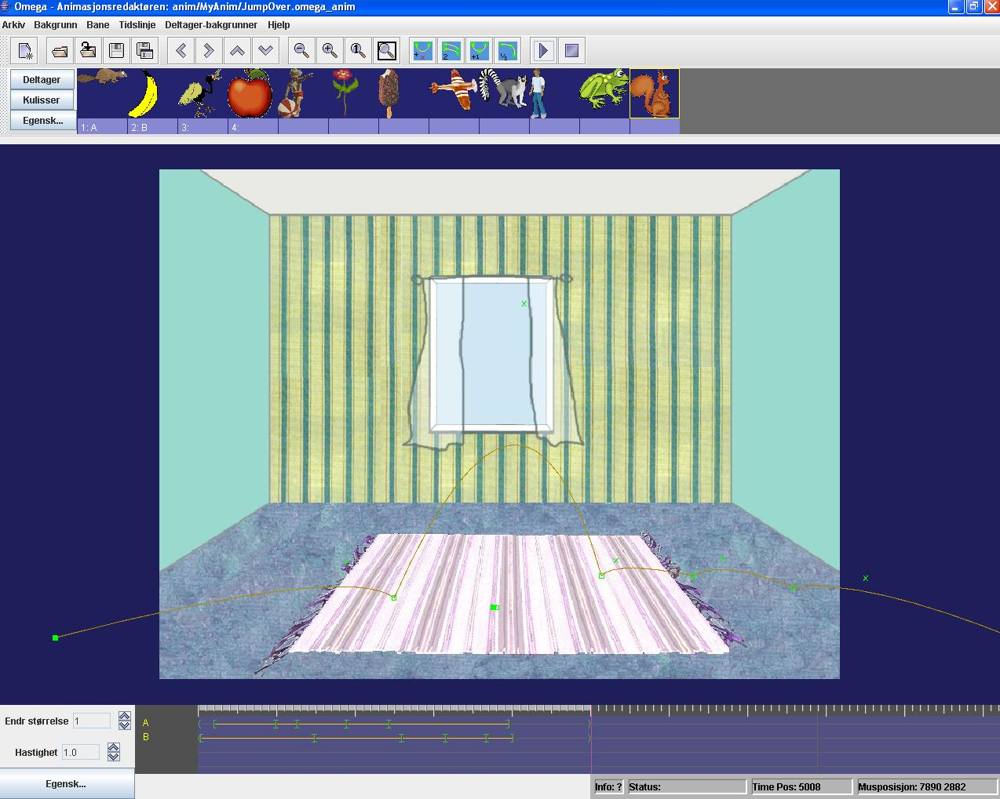
· Vi skal nå forandre bakgrunnsmiljøet for denne animasjonen. Åpne menyen ”Bakgrunn” og klikk på ”Velg bakgrunn”. Åpne mappen ”background” og velg bildet”schoolyard1.jpg”. Dette bildet fungerer like bra, eller enda bedre, ville det vært med et bilde fra elevens skolegård, eller elevens klasserom.
· Scenen vil nå se ut som bildet under neste avsnitt. Vi kommer der til å gjøre nødvendige justeringer av animasjonsbanenes lengde og utforming.
Bilden nedenfor viser resultatet av foregående øvelse - bytte av bakgrunnsbilde. En prøvekjøring av animasjonen (i maksimert vindu) viser at animasjonsbanene havner litt høyt mot den nye bakgrunnen. Vi skal nå flytte begge banene noe nedover i scenebildet.
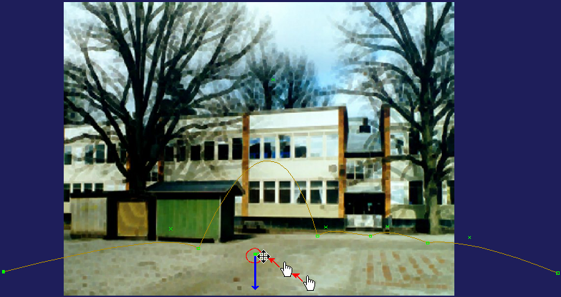
· Sett muspekeren, som bildet over viser, mot den innringede gruppen av grønne punkter i den overhoppende deltakerens hopp-bane. Som vist forandre musepekeren utseende – fra en hånd til en forflytningsmarkør – når den nærmer seg banepunktene.
· Trykk og hold nede Shift-tasten og klikk-dra hele denne banen og dens banepunkter rett nedover med musa – omtrent som den blå pila viser.
· Gjør tilsvarene forflytning av den hoppende deltakerens utstrekte bane – ved å Shift-klikk-dra en av banens punkter nedover i forhold til bakgrunnsbildet – omtrent like langt som foregående forflytning.
· Prøvekjør nå animasjonen for å se resultatet. (Det kan dessverre være litt vanskelig å se nederste delen av animasjonen fordi scenen kuttes en del av verktøyet i animasjonseditoren. Full kontroll på resultatet får man når animasjonen lagres og kjøres fra en leksjon – se nedenfor.) Gjør ev. ytterligere justeringer av banenes plassering, lagre animasjonen og lukk animasjonseditoren.
Tilbake igjen i leksjonseditoren:
· Her kan nå leksjonen Xercise-Demo1 prøvekjøres med de to animasjonene som vi modifiserte. Dersom noe ikke ser helt bra ut, er det bare å gå via ”Rediger anim”-knappen, til respektive animasjoner for videre bearbeiding i animasjonseditoren – som i neste stykke nedenfor…
Vi holder oss fortsatt i leksjonen Xercise-Demo1, og går tilbake til ”hoppe over”-animasjonen for noen forandringer i de hoppende deltakernes baner.
· Lag en setning med ”hopper over” og Velg ”Redigere anim”. Vi begynner med å øke høyden på hoppet over den stillestående deltakeren:
· animasjonsscenen bør, etter våre tidligere forandringer se ut omtrent som på bildet nedenfor. Finn det lille grønne krysspunktet med musmarkøren som markerer det ”buehåndtaket” som bestemmer hoppbuen. Muspekeren endres fra hand til ”flyttmakør” når du nærmer deg punktet (nedre posisjonen i det området i bildet som er innringet med rødt.) Hvis du klikker på krysspunktet blir den markert rød.
· Ta nå tak i punktet (med musa) og dra det oppover– omtrent som den rosa pila viser. Hoppbuen følger med i tilsvarende grad som bildet indikerer. Prøvekjør, og juster videre til resultatet er bra.
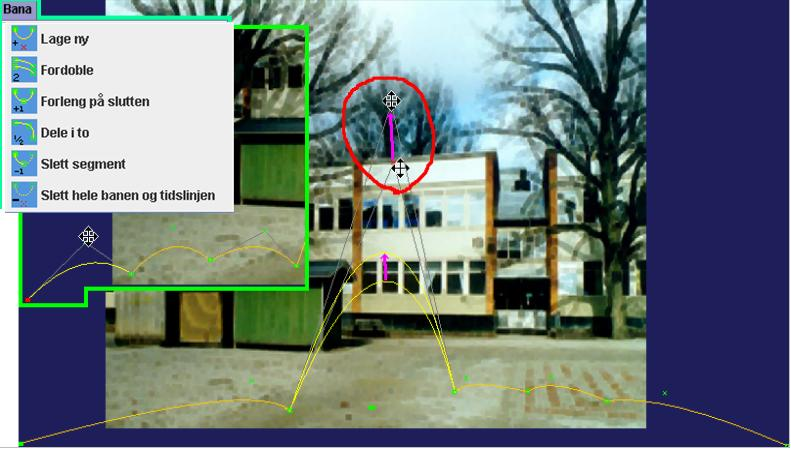
Vi skal nå gjøre den hoppende deltakerens entré litt ”friskere” ved å gi den noen ekstra bøyer:
· Begynn med å klikke på banens startpunkt – den fylte grønne firkanten nede til venstre– slik at den blir markert rød (som i den innfelte delen av bildet over).
· Åpne menyen ”Bane” og klikk på ”Dele i to” (se ramma i bildet ovenfor). Det første segmentet i banen deles nå opp i to deler. Gjenta prosedyren for det nye første segmentet. Vi har nå tre segment i hoppet.
· Bøy nå de tre segmentene med hjelp av deres kryssformede buehåndtak – som indikeres i bildet over. Prøvekjør, juster og lagre.
Det er mange andre ting man kan oppdage, undersøke og forandre på i denne hoppe-over-animasjonen. Ta gjerne en titt på ”markør-egenskapene” for de ulike markørene, eller ”trigger-punktene”, langs de to banene på Tidslinjen.
· Åpne dialogvinduet for markør-egenskapene ved å klikke på knappen ”Egensk…” lengst nede til venstre ved Tidslinjen (eller høyreklikk på en av banene på Tidslinjen og Velg ”Markøregenskaper”).
· Klikk deretter på de forskjellige markørene for å se hva som hender i respektive punktene. Vi går ikke her nærmere inn på de ulike funksjonene og hvordan de kan håndteres og utnyttes. Vi kommer tilbake på dette i neste avsnitt. Bare en titt på funksjonene i denne animasjonen gir et innblikk i noen av mulighetene – å spille lydeffekter, å skalere (endre størrelse på) deltakere, å bytte ”lager” (foran-midt-bak...), å rotere deltakere etc.
Vi skal nå gå gjennom prosessen for å lage en helt ny Omega-is-animasjon: Vi velger å la scenen forestille en romscene– med måne og komet. Alt nødvendig mediamateriale følger med i installasjonen:
· Avslutt Omega-is eller leksjonseditoren, dersom noen av dem er åpne
· Start animasjonseditoren fra startikonet ”animasjon Editor”
· Maksimer vinduet til fullskjerm.
· Det er lurt allerede nå å lagre denne nye animasjonen med sitt uinteressante grunninnhold under et eget navn. Velg Arkiv – Lagre (eller Lagre som ..det spiller ingen rolle på dette stadium). Lagre animasjonen i mappen ”anim\MyAnim” f.eks. med navnet ”MyMoonComet”.
· Velg i menyen ”Bakgrunn” – ”Velg bakgrunn”. Du havner da i Åpne-fil-dialogen i mappen ”media”.
· Åpne mappen ”background”, og let der etter filen”comet.jpg” og åpne den.
Lagre gjerne animasjonen igjen etter dette steget, og deretter etter hver større forandring i utformingen!
Vi har nu grunnstammen for vår romscene. Vi skal snart la noen deltakere røre seg på denne scenen. Men først:
For å få en illusjon av dybden i scenen kunne det være fint å få deltakerne til å røre sig både bak og foran månen og kometen. Dette får vi til ved å plassere to kulisser foran månen og kometen – kopier av disse to objektene.
· Klikk på knappen ”Kulisser” til venstre for deltaker-/kuliss-raden.
· Høyreklikk på den første av de tomme kulissplassene – eller klikk på knappen ”Egenskaper”, slik at dialogvinduet”Kulisser – Egenskaper” Åpnes – se bildet nedenfor.
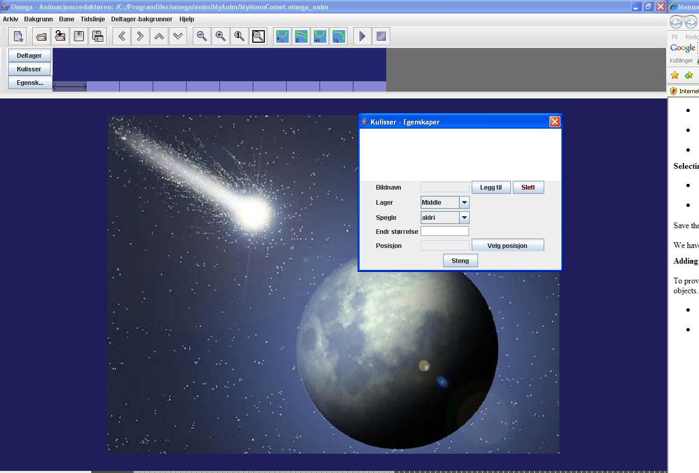
· Klikk nå på knappen ”Legg til” for å velge kulissbilde. Vi havner igjen i Åpne-fil-dialogen, som peker på ”background”-mappen der vi nettopp var. Gå tillbake i mappe-hirearkiet til ”media” og deretter i ”Wings”. Velg filen ”comet.png” (se bildet.)

Som bildet nedenfor viser dukker det opp en kopi av en del av kometen med en rød ramme rundt seg. Når rammen er rød kan man ta tak i kulissen med musa og flytta den til ønsket plass på scenen/bakgrunnsbildet – i dette tilfellet over bakgrunnbildet komet, slik at den smelter inn i bildet uten å synes. Men OBS at man kan flytte kulissen bare en gang. Så snart man slipper den på en ny posisjon, blir rammen gul og uflyttbar. For å få den flyttbar igjen må man klikke på knappen ”Velg posisjon” i ”Kulisser – Egenskaper”.

· Klikk deretter på listeknappen for ”Lager” og Velg ”Middle” – se bilde over og under.
· (I dialogboksen for ”Kulisser – Egenskaper” har man, som vist, også mulighet til å forandre skala/størrelse på kulissen, samt å spille den horisontalt eller vertikalt. Men det har vi ikke behov for i dette tilfellet.)
· Klikk på den tomme plassen for kuliss (til høyre for kometen). Dialogen ”Kulisser – Egenskaper” viser et tomt innhold for denne deltakerplassen. Fyll den med nytt innhold ved å gjenta prosedyren ovenfor– klikk på ”Legg til” (nå er vi allerede i riktig mappe) og Velg kulissen ”BlueMoon.png” – plasser den oppå den originale – forandre Lager fra ”Top” til ”Middle”. Skjermen bør nå se omtrent slik ut:

· Avslutt med å lukke ”Kulisser – Egenskaper”, og gå tillbake til visning av deltakere ved å klikke på knappen ”deltaker” (se rød pil i bildet over).
Nå er det tid for å legge inn deltakernes baner i romscenen:
1. Legg inn en ny deltakerbane ved å velge ”Bane” i menyen – ”Lage ny”, eller ved å klikke på tilsvarende symbol i verktøylinja (se bildet nedenfor). Den nye banen vises øverst i bakgrunnsbildet, og nederst på Tidslinjen.
2. Trykk og hold Shift-tasten og ta tak med musa i banens startpunkt (det venstre fylte punktet) og dra det ned til omtrent ved posisjon 2. som på bildet under.
3. Ta tak i banens sluttpunkt med musa (OBS uten Shift!) (den høyre lille firkanten) og dra den til omstrent ved posisjon 3. som på bildet under.
4. Ta tak med musa ”bøyningspunktet” (det lille krysset) og juster banens bøyning ved å dra den til omtrent ved posisjon 4. som på bildet under.

· Legg nå til ytterligere en deltakerbane ved å gjenta prosedyren over, slik at resultatet ser ut omtrent som på følgende bilde.

· Prøvekjør gjerne animasjonen. Resultatet er kanskje ikke så imponerende: To av Omega-deltakerne seiler hurtig forbi bak/bort fra månen. Vi skal straks forsøke å forbedre animasjonene med nye deltakere og andre tilpasninger.
Vi fortsetter med å velge noen mer passende deltakere:
· Høyreklikk på den første plassen i deltakerlista (eller venstreklikk på ruta og deretter på knappen ”Egensk...”). Vi skal erstatte Omega-deltakeren med en rakett.
· Klikk på
”Velg”-knappen, og gå deretter i velg-dialogen til
mappen ”(media\)actor\Things” og finn fram til deltakeren
”rocket(.png)” og velg denne.
OBS det finnes ytterligere fire bilder som heter
”rocket-01”, ”rocket-02”, ”rocket-00”,
samt ”rocket-NoAnim! Tallbetegnelsen innebærer at
rocket-deltakeren kommer til å få en ”indre”
animasjon. Dette oppnås ved at programmet kommer til å
veksle mellom bildene med tillegget -01, -02, osv til-00 med en
grunnhastighet på0,2 sek pr bilde. Mer om dette under.
Pass på å skrive in et passende ”deltaker-ID”
for deltakeren – f.eks. ”rocket” eller ”rakett”.
Flere mulige justeringer i deltakeregenskapene venter vi med.
· Klikk nå
på deltakerplass nummer 2, og erstatt denne Omega-deltakeren
med deltakeren ”potato.png” (fra samme mappe -
”(media\)actor\Things”).
Gi også denne deltakeren en passende ID, og sett dens
”Grunnskala” til ”0.4 ”.
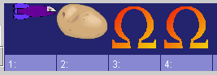

· Lukk dialogen ”Omega – deltakeregenskaper” og prøvekjør.
Det er nå klart for å gjøre en del tilpasninger av hvordan animasjonen gjennomføres tidsmessig, og hvordan deltakere og kulisser forholder sig til hverandre, kulissene og bakgrunnen:
· animasjonen går veldig fort. Vi begynner med å forlenge tidsforløpet.
1. Trykk og hold Ctrl-tasten og ta tak i med musa i høyrekanten av den grå markeringen og dra (og høyre hakemarkørene) – fra 5-sekunders-markeringen til 7-sekundersmarkeringen som 1 på bildet under..
2. Ctrl-dra høyremarkørene på hver av de to banene på tidslinjen, slik at disse forlenges omtrent som 2 på bildet under..

3. Trykk og hold Shift-tasten og dra hele den øverste/første banen til høyre– dvs senere – på tidslinjen, omtrent som på bildet under. Prøvekjør!
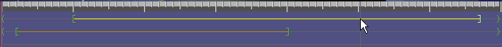
Nå beveger begge deltakerne seg litt langsommere– poteten/asteroiden med et forsprang på romraketten. Men vi vil pynte mer på oppgaven ved å legge inn hendelser og egenskaper for deltakerne på tidslinjen. (Lagre gjerne animasjonen!)
· Først litt grunntilpasninger for raketten:
1. Åpne dialogen ”Markørsegenskaper” – klikk på knappen ”Egensk…” lengst nede til venstre ved tidslinjen (eller høyreklikk på en av markørene/banene på tidslinjen og velg ”Markørsegenskaper” fra pop-up-menyen.
2. Klikk nå på tidslinjens startmarkør (den lille grønne venstrehaken ”<”) for den første/øverste banen. Vi ser nå egenskapene for akkurat denne markøren.
3. Begynn med å gi denne banen en ”Ban-ID”, ved å skrive inn en ”A” i Ban-ID-feltet øverst oppe i dialogen (se bildet under).
4. Vi skal nå få raketten til å fly foran
månen:
Klikk på listeboksen
ved rubrikken ”Velg lager” og velg ”Foran”.
Klikk også i den lille kryssruta til høyre for denne
egenskapen – som på bildet under Z-orden

· Nå gjør vi tilsvarende tilpasninger for den andra banen – poteten:
1. Klikk på tidslinjens startmarkør for den andre banen, slik at egenskapene vises.
2. Også denne banen må gis en ”Ban-ID”, i dette tilfellet ”B”.
3. Vi setter nå rotasjonen på banens deltaker ved å skrive inn Argumentet ”380” (grader pr sek.) i rotasjonshastighet ved feltet for ”Rotere objekt” – og aktivere funksjonen ved å klikke i ”Påslått”-ruta.
4. Vi lar også vår deltaker minske i størrelse ved å skrive inn argumentet ”-0.2 0.2 i ”Endr størrelse på objekt” . OBS desimaltegn og blank mellom tallene! Dette betyr at objektet minsker i størrelse (fra sin grunnskala) med en faktor på –0.2 (minusverdien minsker størrelsen og plussverdien øker den), og til en sluttskala på 0.2.
5. Tilslutt velger vi å og ta med en lydeffekt ved å klikke på ”Velg”-knappen ved ”Spill lyd”. Vi havner i mappen ”media\audio” og finner der lyden ”SpaceSounds.wav(mp3)”. Merk av for i ”Påslått”! Resultatet bør se ut som nedenfor. Prøvekjør og lagre!
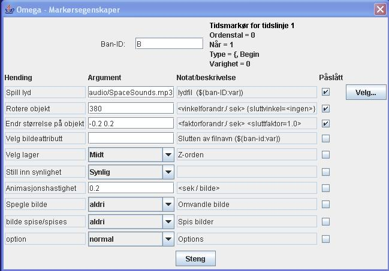
· Vi skal nå legge til flere aktivitetsmarkører på bane A – for å se hvordan ”bildeattributter” fungerer:
1. Høyreklikk på bane A (på tidslinjen) omtrent ved 3-sekundersmarkeringen – Velg ”Legg til aktivitet” fra pop-opp-menyen – en ny markør dukker opp på bane A. Se til at dialogvinduet for Markøregenskaper vises – klikk på den nye markøren, slik at det er dens egenskaper som vises.
2. Skriv inn ”NoAnim” ved feltet for ”Velg bildattributt”, og marker i ”Påslått”-ruta. Dette innebærer at grunndeltakeren ”rocket.png” (med sine animasjonsvarianter) herr byttes ut mot ”rocket-NoAnim.png”, og medfører at det ser ut som om rakettmotoren slukkes i animasjonen.
3. Legg på samme måte til flere nye aktivitetsmarkører på bana A – omtrent ved 4,5-sekunder – og merk av for ”Påslått”. OBS; uten å skrive inn noen attributt. På denne måten nullstilles attributtet, og rakettens/motorens animering gjentas.
· Vi skal avrunde med å Legge til ytterligere en type aktivitet og markør på bane A, nemlig en såkalt. ”Tidssynk”. Denne vil representeres av en markør både på banens representasjon på Tidslinjen og på Scenen, og den benyttes for å påverke hvordan tidsforløpet fordeles over banen på Scenen.
1. Høyreklikk på bane A (på Tidslinjen) ved
ca 4,8 sek – litt til høyre for den andre
aktivitetsmarkøren.
Velg ”Legg til
tidssynk” fra høyreklikk-menyen.
To fiolette markører dukker opp– en takformet på
bane A på Tidslinjen, og en liten kvadratisk på bana A på
Scenen (se bildet).
2. Ctrl-dra den firkantete markøren litt til
venstre mot månens kant – slik som den røde pilen
på bildet nedenfor viser.
Prøvekjør: Effekten bør være at
raketten rører seg inn mot månen i langsommere fart, og
deretter setter opp farten når rakettmotoren slås på
igjen.

· Lagre animasjonen igjen, og fortsett gjerne å legge til nye deltakere og /eller baner. Et forberedt greit alternativ/komplement som deltaker ved siden av romraketten(”rocket.png”), er f.eks.. ”FlyingSaucer.png”.
· En noe mer utviklet versjon av den animasjonen vi har laget finnes i mappen ”PassiveAnim” under navnet ”MoonCometX.omega_anim”. Se og lek med den, og sammenlign resultatet med resultatet av øvelsen over.
Utenom de funksjonene vi nå har gått gjennom, innholder animasjonseditoren ytterligere et antall muligheter som vi ikke har utnyttet i øvelsen over. Vi henviser til listen av funksjoner og kommandoer nedenfor for informasjon om disse. Men før det runder vi av med noen ord om indre animasjon, mulighetene med å benytte variabler i animasjonene etc.
Som vi har nevnt (under ”Legge inn deltakere”) finnes indre animasjon – dvs deltakerens egenbevegelse, f.eks en ”gående” bevegelse– ved at programmet automatisk veksler mellom bilder med samme navn, men med tillegget-01, -02, osv till-00, og med en grunnhastighet på 0,2 sek pr bilde. Dette innebærer bl.a. følgende:
· Hvis man lenker til et deltakerbilde i en mappe hvor det finnes bilder med samme navn med tillegget -01, …, -00, så kommer deltakeren til automatisk å vises med en indre animasjon basert på disse bildene.
· Serien må alltid begynne med ”bildnavn-01.png” og avsluttes alltid med ”bildnavn-00.png”. Jo flere bilder det er i serien, dess mer detaljerte indre animasjon kan det bli. Hastigheten på den indre animasjonen er normalt 0,2 sek pr bilde (5 bilder pr sekund), men kan også justeres med hjelp av egenskap-dialogen for deltakerens tidslinje.
· Om man vil
unngå indre animasjon må man sette inn en deltaker med
bildenavn uten nummerert animasjonsserie, eller sette inn en
attributt (til et animert bilde) som ikke har noen animasjonsserie –
eksempel:
I mappen C:\omega\media\actor\FeedEat finnes det en mengde
bildeserier, bl a
Tiger.png,
Tiger-01.png, Tiger-02.png, Tiger-00.png
Tiger-Eating.png, Tiger-Eating-01.png,…,
Tiger-Eating-04.png, Tiger-Eating-00.png
Tiger-Wait.png,
Tiger-Wait-01.png, Tiger-Wait-00.png
Tiger-Still.png
Dette betyr at man med deltakeren
”Tiger.png” får en indre animasjon basert på
3 delbilder, med attributtet ”Eating” en animasjon med 5
delbilder, med attributtet ”Wait” en animasjon med 2
delbilder, og med attributtet ”Still” en tiger utan indre
animasjon.
For å få mer avnserte koblinger mellom animasjonenes deltakere, deres baner, effektlyd og attributter, samt til valg som er gjort i leksjonene, kan man i animasjonene (liksom i leksjonene) benytte seg av variabler. Dette illustreres enklest og best med hjelp av et par eksempler fra de animasjonene som følger med Omega-is:
· Forenklet ”usynlig” variabel for effektlyd:
- Åpne for eks. animasjonen
”ChaseChased1.omega_anim”.
I denne, liksom i mange andre animasjoner, benyttes et forenklet
sett å hente effektllydfiler med aktuelle deltaker-ID som
variabel.
- Åpne dialogen for Markørsegenskaper –
for den første lagede aktivitetsmarkøren (etter
startmarkøren, Ordenstll=2), bane A på tidslinjen.
Der
angis den noe anonyme lyden ”audio/sound.wav(mp3)” ved
Spill lyd.
Dette innebærer at en lyd med navnet ”sound-”
pluss deltaker-ID for den benyttede deltakeren spilles (hvis den
finnes) – f.eks”sound-lion” om det er løven
som er valgt deltaker. På denne ganske enkle måten kan
effektlyder kobles til hvilken eller hvilke deltakere som benyttes i
animasjonene ved hvert tilfelle.
· Eksplisitt variabel for effektlyd:
- Åpne animasjonen ”StopsInRelationTo1.omega_anim”.
Som det fremgår av
deltakeregenskapene har de tre første deltakernehver sin
variabel – ”carStop”, ”mcStop”
respektive ”busStop”.
- Åpne dialogen for Markøregenskaper –
for startmarkøren (Ordningstal=1) på bana A på
Tidslinjen.
Der angis, ved Spill lyd, en lyd med navn”
audio/${A:1}.wav(mp3)”.
Dette innebærer at en lyd med navn hentet fra variabel 1
for aktuell deltaker på bane A. skal spilles. Det betyr i
klartekst at lydfilens navn her kan være
”audio/carStop.wav(mp3)”, ”audio/mcStop.wav(mp3)”
eller ”audio/busStop.wav(mp3)”.
- Tilsvarende gjelder for lydvalget på baneB.
· Variabel i bildeattributt:
- Åpne animasjonen ”KickToPerson.omega_anim”.
I denne finnes bl.a. en bolle og et knippe ballonger blant
deltakerne.
Som det framgår
av deltakeregenskapene representeres respektive deltakere av bildene
”\actor\KickThrow\BallSoc.png” og
”\actor\KickThrow\balloon.png”
Det framgår også
at disse deltakerne har hver sin variabel – ”Ball”
respektive ”Balloons”.
- Åpne nå dialogen for Markøregenskaper
– for den sist lagde aktivitetsmarkøren (før
sluttmarkøren – Ordningstal=4), bane C på
Tidslinjen. Der angis at et bildeattributt som heter ”Catch${B:1
skal benyttes}”. Det betyr i klartekst at attributtet skal være
”Catch” + innholdet i variabel 1 for deltakeren på
bana B, dvs ”Ball” eller ”Balloons” se
ovenfor.
Bildeattributtet blir altså enten ”CatchBall”
eller ”CatchBalloons”, som tilsvarer bildene
”actor\KickThrow\BlondGirl3-CatchBall.png” resp
”…\BlondGirl3-CatchBalloons.png”.
· Kobling mellom variabler i leksjon og animasjon:
- Åpne leksjonseditoren, og derfra
leksjonen:
”…\lesson-nb\active\J_Långa_meningar\J2\
J2.omega_lesson”.
- Bygg setningen ”Den raske lemuren jager den redde
musa over enga”
Som det framgår av
informasjonen over setningsraden kobler ordet ”musa” til
en deltaker med deltaker-ID ”mouse:scared” på en
bane med Ban-ID ”B” i den animasjonen som hentes (via
egenskapene i ordet ”jager” – inkl to variabler).
- Klikk nå på ”Redigere anim”. animasjonseditoren åpnes med animasjonen ”ChaseFastOverMeadow.omega_anim”.
- Åpne deltakeregenskapene for f.eks. den redde musa (nr 3 bakerst). Der finner du igjen deltaker-ID:t ”mouse:scared”, og denne deltakeren har også fått variabelen ”Scared”. Den benyttes for å spille en passende lyd på bane B ved tidslinjen – se markøregenskapene for den første(”<”) markøren (ordenstall=0).
- På dette viset har variabelen ”scared” for ordet ”redde” i leksjonen blitt koblet videre til variabelen ”Scared” i animasjonen, og der igjen til en passende effektlyd.
- Fra og med versjon 1.2 er det også mulig å referere direkte fra markørsegenskapene til en variabel tilhørende et ord som er valgt for en viss setningsetikett i den leksjonen som kaller på animasjonen; Skriv f.eks.. i markørsegenskapene - for Bildeattributt eller Lydfil - "${@S:2}" for å plukke opp variabel 2 fra det ordet som er valgt for etiketten 'S' i den leksjonen og setningen som tilkaller animasjonen.
· Reservekopier – prev- og prev.prev-filer: Disse reservekopier lages hver gang en animasjon redigeres og lagres. Om noe feil skulle oppstå kan man alltid gjenskape tidigere versjon ved å døpe om en ”animasjon.prev” til ”animasjon.omega_anim”. Av og til kan det bli nødvendig å rydde bort unødvendige prev og prevprev-filer fra animasjonsmappene.
· Hvis to deltakere skal animeres i nært forhold til hverandre, er det en god idé å gjøre det på følgende måte:
- Lag den ene deltakerens bane og utform den med alle eller de fleste detaljene som er ønskelig – både på scenen og ved tidslinjen.
- Anvend deretter kommandoen ”Kopier” bane for å få en nøyaktig kopi av den først, og gjør deretter ønskede justeringer av denne kopien: Flytt f.eks. hele banen med Shift+dra (med mus) både på scenen og på tidslinjen for å få et passende forhold mellom de koblede deltakernes animasjoner i forhold til rom og tid..
· Legg egne
nyproduserte animasjonsfiler i mappen
”anim\MyAnim”
og tilhørende nye mediafiler i tilsvarende mediamapper –
”media\background\MyBackgrounds”
”media\Wings\MyWings”
”media\actor\MyActors” og
”media\audio\MyAudio”
Da blir det lettere å
holde styr på hvilke filer som trengs å kopieres med, og
hvor de skal plasseres, hvis egne nye animasjoner og leksjoner skal
kopieres til andre datamaskiner – og forhåpentligvis til
Omega-is webområde www.omega-is.com
for å deles med andre.
Her følger en liste over kommandoer og funksjoner i Omega-is animasjonseditor:
Arkiv:
 Nytt
– Åpner en ny og tom animasjonsfil
Nytt
– Åpner en ny og tom animasjonsfil
 Åpne
– viser Åpne-dialogen for å hente en passende
animasjon
Åpne
– viser Åpne-dialogen for å hente en passende
animasjon
 Åpne
på nytt – Åpner den sist lagrede åpne
animasjonen
Åpne
på nytt – Åpner den sist lagrede åpne
animasjonen
 Lagre
– lagrer åpne animasjon med det gjeldende filnavnet
Lagre
– lagrer åpne animasjon med det gjeldende filnavnet
 Lagre
som – viser Lagre-dialogen for å gi et navn på
fila
Lagre
som – viser Lagre-dialogen for å gi et navn på
fila
Avslutt – avslutter animasjonseditoren – via kontrollspørsmål.
Bakgrunn:
Velg bakgrunn – viser Velg-dialogen for å Åpne et bakgrunnsbilde
Venstre – flytter hele scenen med bakgrunn og alt til venstre på skjermen
 Høyre
– flytter hele scenen med bakgrunn og alt til høyre på
skjermen
Høyre
– flytter hele scenen med bakgrunn og alt til høyre på
skjermen
 Opp
– flytter hele scenen med bakgrunn og alt oppover på
skjermen
Opp
– flytter hele scenen med bakgrunn og alt oppover på
skjermen
 Ned
- flytter hele scenen med bakgrunn og alt nedover på
skjermen
Ned
- flytter hele scenen med bakgrunn og alt nedover på
skjermen
OBS – ovenstående flytte-kommandoer kan gjøres med mus – dra-slipp
 Mindre
– zoomer ut bakgrunn/scene med ca 25%
Mindre
– zoomer ut bakgrunn/scene med ca 25%
Større – zoomer inn bakgrunn/scene med ca 30%
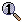1:1 – tilbakestiller bakgrunn/scene til grunnstørrelse
tilpasse til vindu – zoomer bakgrunn/scene til tilgjengelig størrelse på vinduet
Bane:
 Lage
ny – legger
til en ny deltakerbane på scenen – med tidslinje
(opp til 4 stk)
Lage
ny – legger
til en ny deltakerbane på scenen – med tidslinje
(opp til 4 stk)
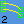Kopiere – legger til en kopi av markert bane på scenen (inkl. tidslinje)
 Forleng
på sluttet –
legger til et nytt segment på slutten av markert bane
Forleng
på sluttet –
legger til et nytt segment på slutten av markert bane
 Dele
i to – deler segmentet til venstre for markert
banepunkt i to deler (segmentet til høyre dersom startpunktet
er markert)
Dele
i to – deler segmentet til venstre for markert
banepunkt i to deler (segmentet til høyre dersom startpunktet
er markert)
 Slette
segment –
sletter segmentet til venstre for markert banepunkt (til høyre
hvis startpunktet)
Slette
segment –
sletter segmentet til venstre for markert banepunkt (til høyre
hvis startpunktet)
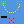Slette hele banen og tidslinjen – som sagt – etter kontrollspørsmål
Tidslinje (animasjonen):
Velg hastighet – ingen funksjon f n
Kjør (Shift-P) – kjør/spill animasjonen
 Stopp
(Shift-S) – stopper kjørningen
Stopp
(Shift-S) – stopper kjørningen
deltakerer-kulisser:
Velg deltaker – viser dialog for å Åpne/hente bildefil for deltaker 1-4 i deltakerlista – tilsvarende Bildenavn – Velg i dialogen deltakeregenskaper – se nedenfor.
Legg til kuliss –
viser dialog for å Åpne/hente bildefil for kuliss på
neste ledige plass i kulisslista – tilsvarende Bildenavn –
Legg til i dialogen
Kulisser - Egenskaper
– se nedenfor.
Vis deltakeregenskaper (Ctrl-A) – viser dialogen deltakeregenskaper – tilsvarer høyreklikk med musa på en plass i deltakerlista, eller klikk på knappen ”Egenskaper” til venstre for deltaker-/kulisslista
Vis kulissegenskaper (Ctrl-W) – viser dialogen Kulisser - Egenskaper – tilsvarer høyreklikk med musa på en plass i kulisslista.
Veksle deltaker/kuliss (Ctrl-F) – veksler mellom visning av deltakerlista eller kulisslista– tilsvarer museklikk på knappene”deltakere” eller ”Kulisser” til venstre for deltaker-/kulisslista
Hjelp:
Vis manual – viser redigeringsdelene av denne manualen.
Om Omega-is – viser informasjonsruta om Omega-is
Om animasjonseditoren – viser informasjonsruta om animasjonseditoren
Kommandoer og funksjoner ved Tidslinjen:
Skalere – endrer størrelsen på Tidslinjen. 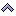-knappen øker skalaens/omfang, -knappen minsker (zoomer inn – ned til 0.2 av grunnskalaen)
Hastighet – forandrer hastigheten på animasjonen. -knappen øker den – opp til 2.0 ggr grunnhastigheten, -knappen minsker den – ned til 0.5 av grunnhastigheten. OBS! – disse innstillingene er bare til for å teste animasjonens utfall ved forskjellige hastigheter (som kan stilles inn pr elev), og de lagres ikke i animasjonsfilen.
Egensk… – denne knappen viser dialogen Markøregenskaper (før den først tidsmarkøren på den første/øverste banens tidslinje). Dialogen viser også egenskapene for den markøren som fokuseres med museklikk – se videre under.
Høyreklikk-menyen på Tidslinjen:
Markøregenskaper – viser dialogen Markøregenskaper for den nærmeste tidsmarkøren på den valgte banens tidslinje.
Legg til tidssynk – legger til en tidssynk-markør på den valgte banens tidslinje, samt en tilsvarende markør på deltakerbanen på scenen.
Legg til aktivitet – legger til en aktivitetsmarkør på den valgte banens tidslinje.
Avbryt –lukker høyerklikkmenyen.
Ctrl + høyreklikk-menyen på Tidslinjen:
Markøregenskaper – viser dialogen Markøregenskaper for den nærmeste tidsmarkøren på den valgte banens tidslinje.
Slette markør – markerer med rødt nærmeste markør på den valgte banens tidslinje, samt Åpner en Ja-Nei-dialog for å bekrefta/avbryte avgjørelsen.
Avbryt – avslutter Ctrl + høyreklikk-menyen..
Direktemanipulering (med mus etc.) av baner og banepunkter - på Scenen:
Vanlig banepunkt – (start-, segment-, slutt- og bøyepunkt) klikk-dra med venstre musknapp til ønsket posisjon. (Alle punktene i bildet til høyre. – markert punkt blir rød – OBS flyttmarkør for musepekeren!)

Tidssynkmarkør – Ctrl + klikk-dra med venstre musknapp til ønsket posisjon. (Fiolett punkt til høyre. – OBS korsmarkør for musepekeren!)

Hel animasjonsbane – Shift + klikk-dra med venstre musknapp (i valgfri banepunkt) til ønsket posisjon.
Direktemanipulering av baner og markører - på Tidslinjen:
animasjonsbanens plassering på Tidslinjen – Shift + klikk-dra med venstre museknapp (valgfritt sted på banen) til ønsket posisjon– alternativt: Ctrl + klikk-dra i banens startpunkt på Tidslinjen.
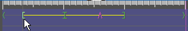
animasjonsbanens lengde på Tidslinjen – Ctrl + klikk-dra i banens stoppunkt til ønsket posisjon på Tidslinjen.
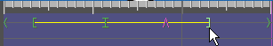
animasjonstidens lengde på Tidslinjen – Ctrl + klikk-dra i sluttpunkt til ønsket posisjon på Tidslinjen.

Aktivitets- og tidssynk-markører – Ctrl + klikk-dra markøren til ønsket posisjon på Tidslinjen.

· JPG-bilder – med filendelsen .jpg eller .jpeg – er som regel det naturlige valget, spesielt for fotografiske bakgrunnsbilder (millioner farger)
· PNG-bilder – med filendelsen .png (millioner farger eller 256 farger)
· GIF-bilder – med filendelsen .gif (256 farger)
256-farger-alternativet kan vara fornuftig for tegnede bilder med distinkte farger.
Før deltakerbilder er det viktig å ha figurer med transparent (gjennomsiktig) bakgrunn, som kan røre seg pent over bakgrunnen. Dette motiverer til valg av følgende format:
· PNG-bilder – enten 256 farger med indeksert transparent bakgrunnsfarge, eller millioner farger med såkalt. Alfa-kanal for den transparente bakgrunnen
· GIF-bilder – 256 farger med indeksert transparent bakgrunnsfarge. Til og med animerte GIF-bilder (for indre animasjoner) kan benyttes, men Omega-is egen metode for indre animering anbefales for sikrere utfall.
Samme bildformat som for deltakerne over (bortsett fra animerte GIF-bilder).
------------------------------------------------------
Omega-is er utviklet og produsert av
Omega-is prosjektgruppe:
Mikael Heimann, Mats Lundälv, Tomas Tjus samt Keith E. Nelson
Programmering:
Lars Nordberg – Femtio Procent Data AB, og Bengt Farre – Androtech KB
Animering
Mats Lundälv og Cathy Agostinelli
Grafik
Maria Olsson, Tommy Hagman, Oscar
Elmgren, Lisa Wikberg, Marcus Anderberg,
Daniel Skøld,
Tomas Abrahamsson, Carina Fihn og Jill Lindstrøm.
Ljudbearbetning
Mats, Linnéa, Emma og Jakob Lundälv samt Brian Holmedal
Språk
Katarina Mühlenbock (SE), Stine Laberg (NO), Elin Styve (NO),
Rebecca Heimann (NO), Mirja Turestedt (SE, UK)
Webbsida
Mattias Twedmark
Omega-is är utvecklat med stød från
Sverige: Hjälpmedelsinstitutet,
Vinnova/KFI, Kunskapscentrum Autism, Gøteborg,
Specialpedagogiska institutet og DART/Drottning Silvias
barnsjukhus, Gøteborg
Norge: Rbup/Halos samt Meltzerfonden, Universitet i Bergen

norsk bokmål versjon: NorMedia AS – www.normedia.no
norsk bokmålstemme: Mona Sjøli
bestilling av norsk bokmål og nynorsk hos www.normedia.no
andre språkversjoner:
Information om hvordan Omega-is kan beställas fås av
Sverige: Speciapedagogiska institutet eller
Topic Data & Språkbehandling Hb,
Barnhusgatan 13, 411 11 Gøteborg
Email: topic@telia.com
Norge: Regionsenter for barn og ungs psykiske helse –
Helseregion Vest, Postboks 7800, 5020 Bergen
Email: Mikael.Heimann@rbup.uib.no